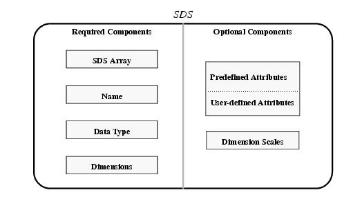
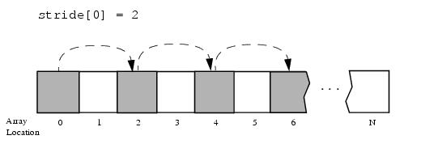
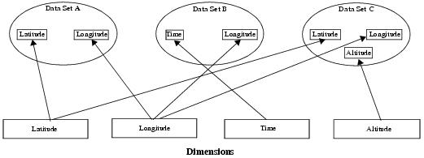
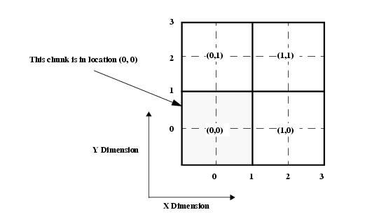
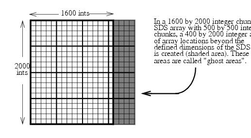

HDF User’s Guide
Version 4.2r4[Top] [Prev][Next]
|
|
HDF User’s GuideVersion 4.2r4 |
[Top] [Prev][Next] |
Chapter 3 -- Scientific Data Sets (SD API)
3.1 Chapter Overview
This chapter describes the scientific data model and the interface routines provided by HDF for creating and accessing the data structures included in the model. This interface is known as the SD interface or the SD API.
3.2 The Scientific Data Set Data Model
The scientific data set, or SDS, is a group of data structures used to store and describe multidimensional arrays of scientific data. Refer to Figure 3a for a graphical overview of the SD data set. Note that in this chapter the terms SDS, SD data set, and data set are used interchangeably; the terms SDS array and array are also used interchangeably.
A scientific data set consists of required and optional components, which will be discussed in the following subsections.
FIGURE 3a The Contents of a Scientific Data Set3.2.1 Required SDS Components
Every SDS must contain the following components: an SDS array, a name, a data type, and the dimensions of the SDS, which are actually the dimensions of the SDS array.
SDS Array
An SDS array is a multidimensional data structure that serves as the core structure of an SDS. This is the primary data component of the SDS model and can be compressed (refer to Section 3.5.2 on page 47 for a description of SDS compression) and/or stored in external files (refer the Section 3.5.3.3 on page 53 for a description of external SDS storage). Users of netCDF should note that SDS arrays are conceptually equivalent to variables in the netCDF data model1.
An SDS has an index and a reference number associated with it. The index is a non-negative integer that describes the relative position of the data set in the file. A valid index ranges from 0 to the total number of data sets in the file minus 1. The reference number is a unique positive integer assigned to the data set by the SD interface when the data set is created. Various SD interface routines can be used to obtain an SDS index or reference number depending on the available information about the SDS. The index can also be determined if the sequence in which the data sets are created in the file is known.
In the SD interface, an SDS identifier uniquely identifies a data set within the file. The identifier is created by the SD interface access routines when a new SDS is created or an existing one is selected. The identifier is then used by other SD interface routines to access the SDS until the access to this SDS is terminated. For an existing data set, the index of the data set can be used to obtain the identifier. Refer to Section 3.4.1 on page 27 for a description of the SD interface routine that creates SDSs and assigns identifiers to them.
SDS Name
The name of an SDS can be provided by the calling program, or is set to "DataSet" by the HDF library at the creation of the SDS. The name consists of case-sensitive alphanumeric characters, is assigned only when the data set is created, and cannot be changed. SDS names do not have to be unique within a file, but their uniqueness makes it easy to semantically distinguish among data sets in the file.
Data Type
The data contained in an SDS array has a data type associated with it. The standard data types supported by the SD interface include 32- and 64-bit floating-point numbers, 8-, 16- and 32-bit signed integers, 8-, 16- and 32-bit unsigned integers, and 8-bit characters. The SD interface also allows the creation of SD data sets consisting of data elements of non-standard lengths (1 to 32 bits). See Section 3.7.11 on page 75 for more information.
Dimensions
SDS dimensions specify the shape and size of an SDS array. The number of dimensions of an array is referred to as the rank of the array. Each dimension has an index and an identifier assigned to it. A dimension also has a size and may have a name associated with it.
A dimension identifier is a positive number uniquely assigned to the dimension by the library. This dimension identifier can be retrieved via an SD interface routine. Refer to Section 3.8.1 on page 76 for a description of how to obtain dimension identifiers.
A dimension index is a non-negative number that describes the ordinal location of a dimension among others in a data set. In other words, when an SDS dimension is created, an index number is associated with it and is one greater than the index associated with the last created dimension that belongs to the same data set. The dimension index is convenient in a sequential search or when the position of the dimension among other dimensions in the SDS is known.
The size of a dimension is a positive integer. Also, one dimension of an SDS array can be assigned the predefined size
SD_UNLIMITED(or0). This dimension is referred to as an unlimited dimension, which, as the name suggests, can grow to any length. Refer to Section 3.5.1.3 on page 41 for more information on unlimited dimensions.Names can optionally be assigned to dimensions, however, dimension names are not treated in the same way as SDS array names. For example, if a name assigned to a dimension was previously assigned to another dimension the SD interface treats both dimensions as the same data component and any changes made to one will be reflected in the other.
Important Note:
HDF4 allows a dimension and a one-dimensional SDS to be given the same name. Prior to HDF4.2r2, however, the library did not always adequately track object types; when a dimension and a one-dimensional SDS shared a name, writing to the SDS or the dimension could cause data corruption to the other. The corrupted data was unrecoverable.
This problem was fixed in Release 4.2r2 and such data corruption will not occur in files created with a 4.2r2 or later library. Note, however, that the fix is effective only in new files; a dimension and a one-dimensional SDS of the same name that were created with a pre-4.2r2 HDF4 Library remain vulnerable to data corruption if an application is unaware of the potential conflict. To safely handle pre-4.2r2 files, the library now provides two functions, SDgetnumvars_byname and SDnametoindices. SDgetnumvars_byname can be used to determine whether a name is unique. If the function reports one ('1') variable by that name, the name is unique and no further precaution needs to be taken. If the name is not unique, i.e., the number of variables by that name is greater than one, SDnametoindices must then be used to retrieve the index and the type of each variable with that name. The desired variable can then can be safely selected via its index. These functions are described in detail in this User's Guide and the HDF4 Reference Manual.
A similar problem is possible when a multi-dimensional SDS and a dimension are created with the same name by a pre-4.2r2 library. The HDF Group has not seen such a failure, however, and it is thought to be very unlikely. Note that the fix introduced in Release 4.2r2 also prevents data corruption from happening for this situation even though the data was created with libraries prior to 4.2r2, assuming no corruption had yet occurred.
3.2.2 Optional SDS Components
There are three types of optional SDS components: user-defined attributes, predefined attributes, and dimension scales. These optional components are only created when specifically requested by the calling program.
Attributes describe the nature and/or the intended usage of the file, data set, or dimension they are attached to. Attributes have a name and value which contains one or more data entries of the same data type. Thus, in addition to name and value, the data type and number of values are specified when the attribute is created.
User-Defined Attributes
User-defined attributes are defined by the calling program and contain auxiliary information about a file, SDS array, or dimension. They are more fully described in Section 3.9 on page 90.
Predefined Attributes
Predefined attributes have reserved names and, in some cases, predefined data types and/or number of data entries. Predefined attributes are useful because they establish conventions that applications can depend on. They are further described in Section 3.10 on page 101.
Dimension Scales
A dimension scale is a sequence of numbers placed along a dimension to demarcate intervals along it. Dimension scales are described in Section 3.8.4 on page 79.
3.2.3 Annotations and the SD Data Model
In the past, annotations were supported in the SD interface to allow the HDF user to attach descriptive information (called metadata) to a data set. With the expansion of the SD interface to include user-defined attributes, the use of annotations to describe metadata should be eliminated. Metadata once stored as an annotation is now more conveniently stored as an attribute. However, to ensure backward compatibility with scientific data sets and applications relying on annotations, the AN annotation interface, described in Chapter 10, Annotations (AN API) can be used to annotate SDSs.
There is no cross-compatibility between attributes and annotations; creating one does not automatically create the other.
3.3 The SD Interface
The SD interface provides routines that store, retrieve, and manipulate scientific data using the SDS data model. The SD interface supports simultaneous access to more than one SDS in more than one HDF file. In addition, the SD interface is designed to support a general scientific data model which is very similar to the netCDF data model developed by the Unidata Program Center2.
For those users who have been using the DFSD interface, the SD interface provide a model compatible with that supported by the DFSD interface. It is recommended that DFSD users apply the SD model and interface to their applications since the DFSD interface is less flexible and less powerful than the SD interface and will eventually be removed from the HDF library.
This section specifies the header file to be used with the SD interface and lists all available SD interface routines, each of which is accompanied by its purpose and the section where the routine is discussed.
3.3.1 Header and Include Files Used by the SD Interface
The "mfhdf.h" header file must be included in programs that invoke SD interface routines. FORTRAN-77 users should refer to Section 2.5.3 on page 16.
3.3.2 SD Interface Routines
All C routines in the SD interface begin with the prefix "SD". The equivalent FORTRAN-77 routines use the prefix "sf". These routines are categorized as follows:
- Access routines initialize and terminate access to HDF files and data sets.
- Read and write routines read and write data sets.
- General inquiry routines return information about the location, contents, and description of the scientific data sets in an HDF file.
- Dimension routines access and define characteristics of dimensions within a data set.
- Dimension scale routines define and access dimension scales within a data set.
- User-defined attribute routines describe and access characteristics of an HDF file, data set or dimension defined by the HDF user.
- Predefined attribute routines access previously-defined characteristics of an HDF file, data set, or dimension.
- Compression routines compress SDS data.
- Chunking/tiling routines manage chunked data sets.
- Miscellaneous routines provide other operations such as external file, n-bit data set, and compatibility operations.
The SD routines are listed in the following table and are discussed in the following sections of this document.
TABLE 3A SD Interface Routines
3.3.3 Tags in the SD Interface
A complete list of SDS tags and their descriptions appears in Table D in Appendix A. Refer to Section 2.2.2.1 on page 8 for a description of tags.
3.4 Programming Model for the SD Interface
This section describes the routines used to initialize the SD interface, create a new SDS or access an existing one, terminate access to that SDS, and shut down the SD interface. Writing to existing scientific data sets will be described in Section 3.5 on page 31.
To support multifile access, the SD interface relies on the calling program to initiate and terminate access to files and data sets. The SD programming model for creating and accessing an SDS in an HDF file is as follows:
To access a single SDS in an HDF file, the calling program must contain the following calls:
C: sd_id = SDstart(filename, access_mode);
sds_id = SDcreate(sd_id, sds_name, data_type, rank, dim_sizes);
OR sds_id = SDselect(sd_id, sds_index);
<Optional operations>
status = SDendaccess(sds_id);
status = SDend(sd_id);
FORTRAN: sd_id = sfstart(filename, access_mode)
sds_id = sfcreate(sd_id, sds_name, data_type, rank, dim_sizes)
OR sds_id = sfselect(sd_id, sds_index)
<Optional operations>
status = sfendacc(sds_id)
status = sfend(sd_id)
To access several files at the same time, a program must obtain a separate SD file identifier (sd_id) for each file to be opened. Likewise, to access more than one SDS, a calling program must obtain a separate SDS identifier (sds_id) for each SDS. For example, to open two SDSs stored in two files a program would execute the following series of function calls.
C: sd_id_1 = SDstart(filename_1, access_mode);
sds_id_1 = SDselect(sd_id_1, sds_index_1);
sd_id_2 = SDstart(filename_2, access_mode);
sds_id_2 = SDselect(sd_id_2, sds_index_2);
<Optional operations>
status = SDendaccess(sds_id_1);
status = SDend(sd_id_1);
status = SDendaccess(sds_id_2);
status = SDend(sd_id_2);
FORTRAN: sd_id_1 = sfstart(filename_1, access_mode)
sds_id_1 = sfselect(sd_id_1, sds_index_1)
sd_id_2 = sfstart(filename_2, access_mode)
sds_id_2 = sfselect(sd_id_2, sds_index_2)
<Optional operations>
status = sfendacc(sds_id_1)
status = sfend(sd_id_1)
status = sfendacc(sds_id_2)
status = sfend(sd_id_2)
3.4.1 Establishing Access to Files and Data Sets: SDstart, SDcreate, and SDselect
In the SD interface, SDstart is used to open files rather than Hopen. SDstart takes two arguments, filename and access_mode, and returns the SD interface identifier, sd_id. Note that the SD interface identifier, sd_id, is not interchangeable with the file identifier, file_id, created by Hopen and used in other HDF APIs.
The argument filename is the name of an HDF or netCDF file.
The argument access_mode specifies the type of access required for operations on the file. All the valid values for access_mode are listed in Table 3B. If the file does not exist, specifying
DFACC_READorDFACC_WRITEwill cause SDstart to return aFAIL(or-1) . SpecifyingDFACC_CREATEcreates a new file with read and write access. IfDFACC_CREATEis specified and the file already exists, the contents of this file will be replaced.TABLE 3B File Access Code Flags
The SD interface identifiers can be obtained and discarded in any order and all SD interface identifiers must be individually discarded, by SDend, before the termination of the calling program.
Although it is possible to open a file more than once, it is recommended that the appropriate access mode be specified and SDstart called only once per file. Repeatedly calling SDstart on the same file and with different access modes may cause unexpected results. Note that it has been reported that opening/closing file in loops is very slow; thus, it is not recommended to perform such operations too many times, particularly, when data is being added to the file between opening/closing.
Prior to HDF 4.2r2, the maximum number of open files was limited to 32; but, it now can be up to what the system allowed.
SDstart returns an SD identifier or a value of
FAIL(or-1). The parameters of SDstart are defined in Table 3C on page 29.SDcreate defines a new SDS using the arguments sd_id, sds_name, data_type, rank, and dim_sizes and returns the data set identifier, sds_id.
The parameter sds_name is a character string containing the name to be assigned to the SDS. The SD interface will generate a default name, "
Data Set", for the SDS, if one is not provided, i.e., when the parameter sds_name is set toNULLin C, or an empty string in FORTRAN-77. The maximum length of an SDS name is no longer limited to 64 characters, starting in HDF 4.2r2. Note that when an older version of the library reads a data set, which was created by a library of version 4.2r2 or later and has the name that is longer than 64 characters, the retrieved name will contain some garbage after 64 characters.The parameter data_type is a defined name, prefaced by
DFNT, and specifies the type of the data to be stored in the data set. The header file "hntdefs.h" contains the definitions of all valid data types, which are described in Chapter 2, HDF Fundamentals, and listed in Table 2F on page 14.The parameter rank is a positive integer specifying the number of dimensions of the SDS array. The maximum rank of an SDS array is defined by
H4_MAX_VAR_DIMS(or32), which is defined in the header file "netcdf.h". Note that, in order for HDF4 and NetCDF models to work together, HDF allows SDS to have rank 0. However, there is no intention for data to be written to this type of SDS, but only to store attribute as part of the data description. Consequently, setting compression and setting chunk are disallowed.Each element of the one-dimensional array dim_sizes specifies the length of the corresponding dimension of the SDS array. The size of dim_sizes must be the value of the parameter rank. To create a data set with an unlimited dimension, assign the value of
SD_UNLIMITED(or0) to dim_sizes[0] in C, and to dim_sizes(rank) in FORTRAN-77. See the notes regarding the potential performance impact of unlimited dimension data sets in Section 14.4.3, "Unlimited Dimension Data Sets (SDSs and Vdatas) and Performance" on page 431.Once an SDS is created, you cannot change its name, data type, size, or shape. However, it is possible to modify the data set's data or to create an empty data set and later add values. To add data or modify an existing data set, use SDselect to get the data set identifier instead of SDcreate.
Note that the SD interface retains no definitions about the size, contents, or rank of an SDS from one SDS to the next, or from one file to the next.
SDselect initiates access to an existing data set. The routine takes two arguments: sd_id and sds_index and returns the SDS identifier sds_id. The argument sd_id is the SD interface identifier returned by SDstart, and sds_index is the position of the data set in the file. The argument sds_index is zero-based, meaning that the index of first SDS in the file is 0.
Similar to SD interface identifiers, SDS identifiers can be obtained and discarded in any order as long as they are discarded properly. Each SDS identifier must be individually disposed of, by SDendaccess, before the disposal of the identifier of the interface in which the SDS is opened.
SDcreate and SDselect each returns an SDS identifier or a value of
FAIL(or-1). The parameters of SDstart, SDcreate, and SDselect are further described in Table 3C.3.4.2 Terminating Access to Files and Data Sets: SDendaccess and SDend
SDendaccess terminates access to the data set and disposes of the data set identifier sds_id. The calling program must make one SDendaccess call for every SDselect or SDcreate call made during its execution. Failing to call SDendaccess for each call to SDselect or SDcreate may result in a loss of data.
SDend terminates access to the file and the SD interface and disposes of the file identifier sd_id. The calling program must make one SDend call for every SDstart call made during its execution. Failing to call SDend for each SDstart may result in a loss of data.
SDendaccess and SDend each returns either a value of
SUCCEED(or0) orFAIL(or-1). The parameters of SDendaccess and SDend are further described in Table 3C.TABLE 3C SDstart, SDcreate, SDselect, SDendaccess, and SDend Parameter ListsEXAMPLE 1. Creating an HDF file and an Empty SDS.This example illustrates the use of SDstart/sfstart, SDcreate/sfcreate, SDendaccess/sfendacc, and SDend/sfend to create the HDF file named SDS.hdf, and an empty data set with the name SDStemplate in the file.
Note that the Fortran program uses a transformed array to reflect the difference between C and Fortran internal data storages. When the actual data is written to the data set, SDS.hdf will contain the same data regardless of the language being used.
C:#include "mfhdf.h" #define FILE_NAME "SDS.hdf" #define SDS_NAME "SDStemplate" #define X_LENGTH 5 #define Y_LENGTH 16 #define RANK 2 /* Number of dimensions of the SDS */ main( ) { /************************* Variable declaration **************************/ int32 sd_id, sds_id; /* SD interface and data set identifiers */ int32 dim_sizes[2]; /* sizes of the SDS dimensions */ intn status; /* status returned by some routines; has value SUCCEED or FAIL */ /********************* End of variable declaration ***********************/ /* * Create the file and initialize the SD interface. */ sd_id = SDstart (FILE_NAME, DFACC_CREATE); /* * Define the dimensions of the array to be created. */ dim_sizes[0] = Y_LENGTH; dim_sizes[1] = X_LENGTH; /* * Create the data set with the name defined in SDS_NAME. Note that * DFNT_INT32 indicates that the SDS data is of type int32. Refer to * Table 2E for definitions of other types. */ sds_id = SDcreate (sd_id, SDS_NAME, DFNT_INT32, RANK, dim_sizes); /* * Terminate access to the data set. */ status = SDendaccess (sds_id); /* * Terminate access to the SD interface and close the file. */ status = SDend (sd_id); }FORTRAN:program create_SDS implicit none C C Parameter declaration. C character*7 FILE_NAME character*11 SDS_NAME integer X_LENGTH, Y_LENGTH, RANK parameter (FILE_NAME = 'SDS.hdf', + SDS_NAME = 'SDStemplate', + X_LENGTH = 5, + Y_LENGTH = 16, + RANK = 2) integer DFACC_CREATE, DFNT_INT32 parameter (DFACC_CREATE = 4, + DFNT_INT32 = 24) C C Function declaration. C integer sfstart, sfcreate, sfendacc, sfend C C**** Variable declaration ******************************************* C integer sd_id, sds_id, dim_sizes(2) integer status C C**** End of variable declaration ************************************ C C C Create the file and initialize the SD interface. C sd_id = sfstart(FILE_NAME, DFACC_CREATE) C C Define dimensions of the array to be created. C dim_sizes(1) = X_LENGTH dim_sizes(2) = Y_LENGTH C C Create the array with the name defined in SDS_NAME. C Note that DFNT_INT32 indicates that the SDS data is of type C integer. Refer to Tables 2E and 2I for the definition of other types. C sds_id = sfcreate(sd_id, SDS_NAME, DFNT_INT32, RANK, . dim_sizes) C C Terminate access to the data set. C status = sfendacc(sds_id) C C Terminate access to the SD interface and close the file. C status = sfend(sd_id) end3.5 Writing Data to an SDS
An SDS can be written partially or entirely. Partial writing includes writing to a contiguous region of the SDS and writing to selected locations in the SDS according to patterns defined by the user. This section describes the routine SDwritedata and how it can write data to part of an SDS or to an entire SDS. The section also illustrates the concepts of compressing SDSs and using external files to store scientific data.
3.5.1 Writing Data to an SDS Array: SDwritedata
SDwritedata can completely or partially fill an SDS array or append data along the dimension that is defined to be of unlimited length (see Section 3.5.1.3 on page 41 for a discussion of unlimited-length dimensions). It can also skip a specified number of SDS array elements between write operations along each dimension.
To write to an existing SDS, the calling program must contain the following sequence of routine calls:
To write to a new SDS, simply replace the call SDselect with the call SDcreate, which is described in Section 3.4.1 on page 27.
SDwritedata takes five arguments: sds_id, start, stride, edges, and data. The argument sds_id is the data set identifier returned by SDcreate or SDselect.
Before proceeding with the description of the remaining arguments, an explanation of the term hyperslab (or slab, as it will be used in this chapter) is in order. A slab is a group of SDS array elements that are stored in consecutive locations. It can be of any size and dimensionality as long as it is a subset of the array, which means that a single array element and the entire array can both be considered slabs. A slab is defined by the multidimensional coordinate of its initial vertex and the lengths of each dimension.
Given this description of the slab concept, the usage of the remaining arguments should become apparent. The argument start is a one-dimensional array specifying the location in the SDS array at which the write operation will begin. The values of each element of the array start are relative to 0 in both the C and FORTRAN-77 interfaces. The size of start must be the same as the number of dimensions in the SDS array. In addition, each value in start must be smaller than its corresponding SDS array dimension unless the dimension is unlimited. Violating any of these conditions causes SDwritedata to return
FAIL.The argument stride is a one-dimensional array specifying, for each dimension, the interval between values to be written. For example, setting the first element of the array stride equal to 1 writes data to every location along the first dimension. Setting the first element of the array stride to 2 writes data to every other location along the first dimension. Figure 3b illustrates this example, where the shading elements are written and the white elements are skipped. If the argument stride is set to
NULLin C (or either0or1in FORTRAN-77), SDwritedata operates as if every element of stride contains a value of 1, and a contiguous write is performed. For better performance, it is recommended that the value of stride be defined asNULL(i.e.,0or1in FORTRAN-77) rather than being set to 1.The size of the array stride must be the same as the number of dimensions in the SDS array. Also, each value in stride must be smaller than or equal to its corresponding SDS array dimension unless the dimension is unlimited. Violating any of these conditions causes SDwritedata to return
FAIL.FIGURE 3b An Example of Access Pattern ("Strides")The argument edges is a one-dimensional array specifying the length of each dimension of the slab to be written. If the slab has fewer dimensions than the SDS data set has, the size of edges must still be equal to the number of dimensions in the SDS array and all the elements corresponding to the additional dimensions must be set to 1.
Each value in the array edges must not be larger than the length of the corresponding dimension in the SDS data set unless the dimension is unlimited. Attempting to write slabs larger than the size of the SDS data set will result in an error condition.
In addition, the sum of each value in the array edges and the corresponding value in the start array must be smaller than or equal to its corresponding SDS array dimension unless the dimension is unlimited. Violating any of these conditions causes SDwritedata to return
FAIL. When SDreaddata returns FAIL (or -1) due to any invalid argements, the error codeDFE_ARGSwill be pushed on the stack.The parameter data contains the SDS data to be written. If the SDS array is smaller than the buffer data, the amount of data written will be limited to the maximum size of the SDS array.
Be aware that the mapping between the dimensions of a slab and the order in which the slab values are stored in memory is different between C and FORTRAN-77. In C, the values are stored with the assumption that the last dimension of the slab varies fastest (or "row-major order" storage), but in FORTRAN-77 the first dimension varies fastest (or "column-major order" storage). These storage order conventions can cause some confusion when data written by a C program is read by a FORTRAN-77 program or vice versa.
There are two FORTRAN-77 versions of this routine: sfwdata and sfwcdata. The routine sfwdata writes numeric scientific data and sfwcdata writes character scientific data.
SDwritedata returns either a value of
SUCCEED(or0) orFAIL(or-1). The parameters of this routine are described in Table 3D.TABLE 3D SDwritedata Parameter List3.5.1.1 Filling an Entire Array
Filling an array is a simple slab operation where the slab begins at the origin of the SDS array and fills every location in the array. SDwritedata fills an entire SDS array with data when all elements of the array start are set to
0, the argument stride is set equal toNULLin C or each element of the array stride is set to1in both C and FORTRAN-77, and each element of the array edges is equal to the length of each dimension.EXAMPLE 2. Writing to an SDS.This example illustrates the use of the routines SDselect/sfselect and SDwritedata/sfwrite to select the first SDS in the file SDS.hdf created in Example 1 and to write actual data to it.
C:#include "mfhdf.h" #define FILE_NAME "SDS.hdf" #define X_LENGTH 5 #define Y_LENGTH 16 main( ) { /************************* Variable declaration **************************/ int32 sd_id, sds_id, sds_index; intn status; int32 start[2], edges[2]; int32 data[Y_LENGTH][X_LENGTH]; int i, j; /********************* End of variable declaration ***********************/ /* * Data set data initialization. */ for (j = 0; j < Y_LENGTH; j++) { for (i = 0; i < X_LENGTH; i++) data[j][i] = (i + j) + 1; } /* * Open the file and initialize the SD interface. */ sd_id = SDstart (FILE_NAME, DFACC_WRITE); /* * Attach to the first data set. */ sds_index = 0; sds_id = SDselect (sd_id, sds_index); /* * Define the location and size of the data to be written to the data set. */ start[0] = 0; start[1] = 0; edges[0] = Y_LENGTH; edges[1] = X_LENGTH; /* * Write the stored data to the data set. The third argument is set to NULL * to specify contiguous data elements. The last argument must * be explicitly cast to a generic pointer since SDwritedata is designed * to write generic data. */ status = SDwritedata (sds_id, start, NULL, edges, (VOIDP)data); /* * Terminate access to the data set. */ status = SDendaccess (sds_id); /* * Terminate access to the SD interface and close the file. */ status = SDend (sd_id); }FORTRAN:program write_data implicit none C C Parameter declaration. C character*7 FILE_NAME character*11 SDS_NAME integer X_LENGTH, Y_LENGTH, RANK parameter (FILE_NAME = 'SDS.hdf', + SDS_NAME = 'SDStemplate', + X_LENGTH = 5, + Y_LENGTH = 16, + RANK = 2) integer DFACC_WRITE, DFNT_INT32 parameter (DFACC_WRITE = 2, + DFNT_INT32 = 24) C C Function declaration. C integer sfstart, sfselect, sfwdata, sfendacc, sfend C C**** Variable declaration ******************************************* C integer sd_id, sds_id, sds_index, status integer start(2), edges(2), stride(2) integer i, j integer data(X_LENGTH, Y_LENGTH) C C**** End of variable declaration ************************************ C C C Data set data initialization. C do 20 j = 1, Y_LENGTH do 10 i = 1, X_LENGTH data(i, j) = i + j - 1 10 continue 20 continue C C Open the file and initialize the SD interface. C sd_id = sfstart(FILE_NAME, DFACC_WRITE) C C Attach to the first data set. C sds_index = 0 sds_id = sfselect(sd_id, sds_index) C C Define the location and size of the data to be written C to the data set. Note that setting values of the array stride to 1 C specifies the contiguous writing of data. C start(1) = 0 start(2) = 0 edges(1) = X_LENGTH edges(2) = Y_LENGTH stride(1) = 1 stride(2) = 1 C C Write the stored data to the data set named in SDS_NAME. C Note that the routine sfwdata is used instead of sfwcdata C to write the numeric data. C status = sfwdata(sds_id, start, stride, edges, data) C C Terminate access to the data set. C status = sfendacc(sds_id) C C Terminate access to the SD interface and close the file. C status = sfend(sd_id) end3.5.1.2 Writing Slabs to an SDS Array
To allow preexisting data to be modified, the HDF library does not prevent SDwritedata from overwriting one slab with another. As a result, the calling program is responsible for managing any overlap when writing slabs. The HDF library will issue an error if a slab extends past the valid boundaries of the SDS array. However, appending data along an unlimited dimension is allowed.
EXAMPLE 3. Writing a Slab of Data to an SDS.This example shows how to fill a 3-dimensional SDS array with data by writing series of 2-dimensional slabs to it.
C:#include "mfhdf.h" #define FILE_NAME "SLABS.hdf" #define SDS_NAME "FilledBySlabs" #define X_LENGTH 4 #define Y_LENGTH 5 #define Z_LENGTH 6 #define RANK 3 main( ) { /************************* Variable declaration **************************/ int32 sd_id, sds_id; intn status; int32 dim_sizes[3], start[3], edges[3]; int32 data[Z_LENGTH][Y_LENGTH][X_LENGTH]; int32 zx_data[Z_LENGTH][X_LENGTH]; int i, j, k; /********************* End of variable declaration ***********************/ /* * Data initialization. */ for (k = 0; k < Z_LENGTH; k++) for (j = 0; j < Y_LENGTH; j++) for (i = 0; i < X_LENGTH; i++) data[k][j][i] = (i + 1) + (j + 1) + (k + 1); /* * Create the file and initialize the SD interface. */ sd_id = SDstart (FILE_NAME, DFACC_CREATE); /* * Define dimensions of the array to be created. */ dim_sizes[0] = Z_LENGTH; dim_sizes[1] = Y_LENGTH; dim_sizes[2] = X_LENGTH; /* * Create the array with the name defined in SDS_NAME. */ sds_id = SDcreate (sd_id, SDS_NAME, DFNT_INT32, RANK, dim_sizes); /* * Set the parameters start and edges to write * a 6x4 element slab of data to the data set; note * that edges[1] is set to 1 to define a 2-dimensional slab * parallel to the ZX plane. * start[1] (slab position in the array) is initialized inside * the for loop. */ edges[0] = Z_LENGTH; edges[1] = 1; edges[2] = X_LENGTH; start[0] = start[2] = 0; for (j = 0; j < Y_LENGTH; j++) { start[1] = j; /* * Initialize zx_data buffer (data slab). */ for ( k = 0; k < Z_LENGTH; k++) { for ( i = 0; i < X_LENGTH; i++) { zx_data[k][i] = data[k][j][i]; } } /* * Write the data slab into the SDS array defined in SDS_NAME. * Note that the 3rd parameter is NULL which indicates that consecutive * slabs in the Y direction are written. */ status = SDwritedata (sds_id, start, NULL, edges, (VOIDP)zx_data); } /* * Terminate access to the data set. */ status = SDendaccess (sds_id); /* * Terminate access to the SD interface and close the file. */ status = SDend (sd_id); }FORTRAN:program write_slab implicit none C C Parameter declaration. C character*9 FILE_NAME character*13 SDS_NAME integer X_LENGTH, Y_LENGTH, Z_LENGTH, RANK parameter (FILE_NAME = 'SLABS.hdf', + SDS_NAME = 'FilledBySlabs', + X_LENGTH = 4, + Y_LENGTH = 5, + Z_LENGTH = 6, + RANK = 3) integer DFACC_CREATE, DFNT_INT32 parameter (DFACC_CREATE = 4, + DFNT_INT32 = 24) C C Function declaration. C integer sfstart, sfcreate, sfwdata, sfendacc, sfend C C**** Variable declaration ******************************************* C integer sd_id, sds_id integer dim_sizes(3), start(3), edges(3), stride(3) integer i, j, k, status integer data(X_LENGTH, Y_LENGTH, Z_LENGTH) integer xz_data(X_LENGTH, Z_LENGTH) C C**** End of variable declaration ************************************ C C C Data initialization. C do 30 k = 1, Z_LENGTH do 20 j = 1, Y_LENGTH do 10 i = 1, X_LENGTH data(i, j, k) = i + j + k 10 continue 20 continue 30 continue C C Create the file and initialize the SD interface. C sd_id = sfstart(FILE_NAME, DFACC_CREATE) C C Define dimensions of the array to be created. C dim_sizes(1) = X_LENGTH dim_sizes(2) = Y_LENGTH dim_sizes(3) = Z_LENGTH C C Create the data set with the name defined in SDS_NAME. C sds_id = sfcreate(sd_id, SDS_NAME, DFNT_INT32, RANK, . dim_sizes) C C Set the parameters start and edges to write C a 4x6 element slab of data to the data set; C note that edges(2) is set to 1 to define a 2 dimensional slab C parallel to the XZ plane; C start(2) (slab position in the array) is initialized inside the C for loop. C edges(1) = X_LENGTH edges(2) = 1 edges(3) = Z_LENGTH start(1) = 0 start(3) = 0 stride(1) = 1 stride(2) = 1 stride(3) = 1 do 60 j = 1, Y_LENGTH start(2) = j - 1 C C Initialize the buffer xz_data (data slab). C do 50 k = 1, Z_LENGTH do 40 i = 1, X_LENGTH xz_data(i, k) = data(i, j, k) 40 continue 50 continue C C Write the data slab into SDS array defined in SDS_NAME. C Note that the elements of array stride are set to 1 to C specify that the consecutive slabs in the Y direction are written. C status = sfwdata(sds_id, start, stride, edges, xz_data) 60 continue C C Terminate access to the data set. C status = sfendacc(sds_id) C C Terminate access to the SD interface and close the file. C status = sfend(sd_id) endEXAMPLE 4. Altering Values within an SDS Array.This example demonstrates how the routine SDwritedata can be used to alter the values of the elements in the 10th and 11th rows, at the 2nd column, in the SDS array created in the Example 1 and written in Example 2. FORTRAN-77 routine sfwdata is used to alter the elements in the 2nd row, 10th and 11th columns, to reflect the difference between C and Fortran internal storage.
C:#include "mfhdf.h" #define FILE_NAME "SDS.hdf" main( ) { /************************* Variable declaration **************************/ int32 sd_id, sds_id, sds_index; intn status; int32 start[2], edges[2]; int32 new_data[2]; int i, j; /********************* End of variable declaration ***********************/ /* * Open the file and initialize the SD interface with write access. */ sd_id = SDstart (FILE_NAME, DFACC_WRITE); /* * Select the first data set. */ sds_index = 0; sds_id = SDselect (sd_id, sds_index); /* * Set up the start and edge parameters to write new element values * into 10th row, 2nd column place, and 11th row, 2nd column place. */ start[0] = 9; /* starting at 10th row */ start[1] = 1; /* starting at 2nd column */ edges[0] = 2; /* rows 10th and 11th */ edges[1] = 1; /* column 2nd only */ /* * Initialize buffer with the new values to be written. */ new_data[0] = new_data[1] = 1000; /* * Write the new values. */ status = SDwritedata (sds_id, start, NULL, edges, (VOIDP)new_data); /* * Terminate access to the data set. */ status = SDendaccess (sds_id); /* * Terminate access to the SD interface and close the file. */ status = SDend (sd_id); }FORTRAN:program alter_data implicit none C C Parameter declaration. C character*7 FILE_NAME integer DFACC_WRITE parameter (FILE_NAME = 'SDS.hdf', + DFACC_WRITE = 2) C C Function declaration. C integer sfstart, sfselect, sfwdata, sfendacc, sfend C C**** Variable declaration ******************************************* C integer sd_id, sds_id, sds_index integer start(2), edges(2), stride(2) integer status integer new_data(2) C C**** End of variable declaration ************************************ C C C Open the file and initialize the SD interface. C sd_id = sfstart(FILE_NAME, DFACC_WRITE) C C Select the first data set. C sds_index = 0 sds_id = sfselect(sd_id, sds_index) C C Initialize the start, edge, and stride parameters to write C two elements into 2nd row, 10th column and 11th column places. C C Specify 2nd row. C start(1) = 1 C C Specify 10th column. C start(2) = 9 edges(1) = 1 C C Two elements are written along 2nd row. C edges(2) = 2 stride(1) = 1 stride(2) = 1 C C Initialize the new values to be written. C new_data(1) = 1000 new_data(2) = 1000 C C Write the new values. C status = sfwdata(sds_id, start, stride, edges, new_data) C C Terminate access to the data set. C status = sfendacc(sds_id) C C Terminate access to the SD interface and close the file. C status = sfend(sd_id) end3.5.1.3 Appending Data to an SDS Array along an Unlimited Dimension
An SDS array can be made appendable, however, only along one dimension. This dimension must be specified as an appendable dimension when it is created.
In C, only the first element of the SDcreate parameter dim_sizes (i.e., the dimension of the lowest rank or the slowest-changing dimension) can be assigned the value
SD_UNLIMITED(or0) to make the first dimension unlimited. In FORTRAN-77, only the last dimension (i.e., the dimension of the highest rank or the slowest-changing dimension) can be unlimited. In other words, in FORTRAN-77 dim_sizes(rank) must be set to the valueSD_UNLIMITEDto make the last dimension appendable.To append data to a data set without overwriting previously-written data, the user must specify the appropriate coordinates in the start parameter of the SDwritedata routine. For example, if 15 data elements have been written to an unlimited dimension, appending data to the array requires a start coordinate of 15. Specifying a starting coordinate less than the current number of elements written to the unlimited dimension will result in data being overwritten. In either case, all of the coordinates in the array except the one corresponding to the unlimited dimension must be equal to or less than the lengths of their corresponding dimensions.
Any time an unlimited dimension is appended to, the HDF library will automatically adjust the dimension record to the new length. If the newly-appended data begins beyond the previous length of the dimension, the locations between the old data and the beginning of the newly-appended data are initialized to the assigned fill value if there is one defined by the user, or the default fill value if none is defined. Refer to Section 3.10.5 on page 106 for a discussion of fill value.
3.5.1.4 Determining whether an SDS Array is Appendable: SDisrecord
SDisrecord determines whether the data set identified by the parameter sds_id is appendable, which means that the slowest-changing dimension of the SDS array is declared unlimited when the data set is created. The syntax of SDisrecord is as follows:
SDisrecord returns
TRUE(or1) when the data set specified by sds_id is appendable andFALSE(or0) otherwise. The parameter of this routine is defined in Table 3E.TABLE 3E SDisrecord Parameter List
3.5.1.5 Setting the Block Size: SDsetblocksize
SDsetblocksize sets the size of the blocks used for storing the data for unlimited dimension data sets. This is used only when creating new data sets; it does not have any affect on existing data sets. The syntax of this routine is as follows:
SDsetblocksize must be called after SDcreate or SDselect and before SDwritedata. The parameter block_size should be set to a multiple of the desired buffer size.
SDsetblocksize returns a value of
SUCCEED(or0) orFAIL(or-1). Its parameters are further described in Table 3F.TABLE 3F SDsetblocksize Parameter List
This example creates a 10x10 SDS array with one unlimited dimension and writes data to it. The file is reopened and the routine SDisrecord/sfisrcrd is used to determine whether the selected SDS array is appendable. Then new data is appended, starting at the 11th row.
C:#include "mfhdf.h" #define FILE_NAME "SDSUNLIMITED.hdf" #define SDS_NAME "AppendableData" #define X_LENGTH 10 #define Y_LENGTH 10 #define RANK 2 main( ) { /************************* Variable declaration **************************/ int32 sd_id, sds_id, sds_index; intn status; int32 dim_sizes[2]; int32 data[Y_LENGTH][X_LENGTH], append_data[X_LENGTH]; int32 start[2], edges[2]; int i, j; /********************* End of variable declaration ***********************/ /* * Data initialization. */ for (j = 0; j < Y_LENGTH; j++) { for (i = 0; i < X_LENGTH; i++) data[j][i] = (i + 1) + (j + 1); } /* * Create the file and initialize the SD interface. */ sd_id = SDstart (FILE_NAME, DFACC_CREATE); /* * Define dimensions of the array. Make the first dimension * appendable by defining its length to be unlimited. */ dim_sizes[0] = SD_UNLIMITED; dim_sizes[1] = X_LENGTH; /* * Create the array data set. */ sds_id = SDcreate (sd_id, SDS_NAME, DFNT_INT32, RANK, dim_sizes); /* * Define the location and the size of the data to be written * to the data set. */ start[0] = start[1] = 0; edges[0] = Y_LENGTH; edges[1] = X_LENGTH; /* * Write the data. */ status = SDwritedata (sds_id, start, NULL, edges, (VOIDP)data); /* * Terminate access to the array data set, terminate access * to the SD interface, and close the file. */ status = SDendaccess (sds_id); status = SDend (sd_id); /* * Store the array values to be appended to the data set. */ for (i = 0; i < X_LENGTH; i++) append_data[i] = 1000 + i; /* * Reopen the file and initialize the SD interface. */ sd_id = SDstart (FILE_NAME, DFACC_WRITE); /* * Select the first data set. */ sds_index = 0; sds_id = SDselect (sd_id, sds_index); /* * Check if selected SDS is unlimited. If it is not, then terminate access * to the SD interface and close the file. */ if ( SDisrecord (sds_id) ) { /* * Define the location of the append to start at the first column * of the 11th row of the data set and to stop at the end of the * eleventh row. */ start[0] = Y_LENGTH; start[1] = 0; edges[0] = 1; edges[1] = X_LENGTH; /* * Append data to the data set. */ status = SDwritedata (sds_id, start, NULL, edges, (VOIDP)append_data); } /* * Terminate access to the data set. */ status = SDendaccess (sds_id); /* * Terminate access to the SD interface and close the file. */ status = SDend (sd_id); }FORTRAN:program append_sds implicit none C C Parameter declaration. C character*16 FILE_NAME character*14 SDS_NAME integer X_LENGTH, Y_LENGTH, RANK parameter (FILE_NAME = 'SDSUNLIMITED.hdf', + SDS_NAME = 'AppendableData', + X_LENGTH = 10, + Y_LENGTH = 10, + RANK = 2) integer DFACC_CREATE, DFACC_WRITE, SD_UNLIMITED, + DFNT_INT32 parameter (DFACC_CREATE = 4, + DFACC_WRITE = 2, + SD_UNLIMITED = 0, + DFNT_INT32 = 24) C C Function declaration. C integer sfstart, sfcreate, sfwdata, sfselect integer sfendacc, sfend C C**** Variable declaration ******************************************* C integer sd_id, sds_id, sds_index, status integer dim_sizes(2) integer start(2), edges(2), stride(2) integer i, j integer data (X_LENGTH, Y_LENGTH), append_data(X_LENGTH) C C**** End of variable declaration ************************************ C C C Data initialization. C do 20 j = 1, Y_LENGTH do 10 i = 1, X_LENGTH data(i, j) = i + j 10 continue 20 continue C C Create the file and initialize the SD interface. C sd_id = sfstart(FILE_NAME, DFACC_CREATE) C C Define dimensions of the array. Make the C last dimension appendable by defining its length as unlimited. C dim_sizes(1) = X_LENGTH dim_sizes(2) = SD_UNLIMITED C Create the array data set. sds_id = sfcreate(sd_id, SDS_NAME, DFNT_INT32, RANK, . dim_sizes) C C Define the location and the size of the data to be written C to the data set. Note that the elements of array stride are C set to 1 for contiguous writing. C start(1) = 0 start(2) = 0 edges(1) = X_LENGTH edges(2) = Y_LENGTH stride(1) = 1 stride(2) = 1 C C Write the data. C status = sfwdata(sds_id, start, stride, edges, data) C C Terminate access to the data set, terminate access C to the SD interface, and close the file. C status = sfendacc(sds_id) status = sfend(sd_id) C C Store the array values to be appended to the data set. C do 30 i = 1, X_LENGTH append_data(i) = 1000 + i - 1 30 continue C C Reopen the file and initialize the SD. C sd_id = sfstart(FILE_NAME, DFACC_WRITE) C C Select the first data set. C sds_index = 0 sds_id = sfselect(sd_id, sds_index) C C Define the location of the append to start at the 11th C column of the 1st row and to stop at the end of the 10th row. C start(1) = 0 start(2) = Y_LENGTH edges(1) = X_LENGTH edges(2) = 1 C C Append the data to the data set. C status = sfwdata(sds_id, start, stride, edges, append_data) C C Terminate access to the data set. C status = sfendacc(sds_id) C C Terminate access to the SD interface and close the file. C status = sfend(sd_id) end3.5.2 Compressing SDS Data: SDsetcompress
The SDsetcompress routine compresses an existing data set or creates a new compressed data set. It is a simplified interface to the HCcreate routine, and should be used instead of HCcreate unless the user is familiar with the lower-level routines.
The compression algorithms currently supported by SDsetcompress are:
The syntax of the routine SDsetcompress is as follows:
The parameter comp_type specifies the compression type definition and is set to
COMP_CODE_NONE(or 0) for no compressionCOMP_CODE_RLE(or 1) for run-length encoding (RLE)COMP_CODE_SKPHUFF(or 3) for Skipping HuffmanCOMP_CODE_DEFLATE(or 4) for GZIP compressionCOMP_CODE_SZIP(or 5) for Szip compressionCompression information is specified by the parameter c_info in C, and by the parameter comp_prm in FORTRAN-77. The parameter c_info is a pointer to a union structure of type comp_info. Refer to the SDsetcompress entry in the HDF Reference Manual for the description of the comp_info structure.
If comp_type is set to
COMP_CODE_NONEorCOMP_CODE_RLE, the parameters c_info and comp_prm are not used; c_info can be set toNULLand comp_prm can be undefined.If comp_type is set to
COMP_CODE_SKPHUFF, then the structure skphuff in the union comp_info in C (comp_prm(1) in FORTRAN-77) must be provided with the size, in bytes, of the data elements.If comp_type is set to
COMP_CODE_DEFLATE, the deflate structure in the union comp_info in C (comp_prm(1) in FORTRAN-77) must be provided with the information about the compression effort.If comp_type is set to
COMP_CODE_SZIP, the Szip options mask and the number of pixels per block in a chunked and Szip-compressed dataset must be specified inc_info.szip.options_maskandc_info.szip.pixels_per_blockin C, and comp_prm(1) and comp_prm(2) in Fortran, respectively.For example, to compress signed 16-bit integer data using the adaptive Huffman algorithm, the following definition and SDsetcompress call are used.
To compress a data set using the gzip deflation algorithm with the maximum effort specified, the following definition and SDsetcompress call are used.
SDsetcompress functionality is currently limited to the following:
- Write the compressed data, in its entirety, to the data set. The data set is built in-core then written in a single write operation.
- Append to a compressed data set. The data of the data set is read into memory, appended with data along the unlimited dimension, then compressed and written back to the data set.
The existing compression algorithms supported by HDF do not allow partial modification to a compressed datastream. Overwriting the contents of existing data sets may be supported in the future. Note also that SDsetcompress performs the compression of the data, not SDwritedata.
SDsetcompress returns a value of
SUCCEED(or0) orFAIL(or-1). The C version parameters are further described in Table 3G and the FORTRAN-77 version parameters are further described in Table 3H.
TABLE 3G SDsetcompress Parameter ListTABLE 3H sfscompress Parameter List
This example uses the routine SDsetcompress/sfscompress to compress SDS data with the GZIP compression method. See comments in the program regarding the use of the Skipping Huffman or RLE compression methods.
C:#include "mfhdf.h" #define FILE_NAME "SDScompressed.hdf" #define SDS_NAME "SDSgzip" #define X_LENGTH 5 #define Y_LENGTH 16 #define RANK 2 main( ) { /************************* Variable declaration **************************/ int32 sd_id, sds_id, sds_index; intn status; int32 comp_type; /* Compression flag */ comp_info c_info; /* Compression structure */ int32 start[2], edges[2], dim_sizes[2]; int32 data[Y_LENGTH][X_LENGTH]; int i, j; /********************* End of variable declaration ***********************/ /* * Buffer array data and define array dimensions. */ for (j = 0; j < Y_LENGTH; j++) { for (i = 0; i < X_LENGTH; i++) data[j][i] = (i + j) + 1; } dim_sizes[0] = Y_LENGTH; dim_sizes[1] = X_LENGTH; /* * Create the file and initialize the SD interface. */ sd_id = SDstart (FILE_NAME, DFACC_CREATE); /* * Create the data set with the name defined in SDS_NAME. */ sds_id = SDcreate (sd_id, SDS_NAME, DFNT_INT32, RANK, dim_sizes); /* * Ininitialize compression structure element and compression * flag for GZIP compression and call SDsetcompress. * * To use the Skipping Huffman compression method, initialize * comp_type = COMP_CODE_SKPHUFF * c_info.skphuff.skp_size = value * * To use the RLE compression method, initialize * comp_type = COMP_CODE_RLE * No structure element needs to be initialized. */ comp_type = COMP_CODE_DEFLATE; c_info.deflate.level = 6; status = SDsetcompress (sds_id, comp_type, &c_info); /* * Define the location and size of the data set * to be written to the file. */ start[0] = 0; start[1] = 0; edges[0] = Y_LENGTH; edges[1] = X_LENGTH; /* * Write the stored data to the data set. The last argument * must be explicitly cast to a generic pointer since SDwritedata * is designed to write generic data. */ status = SDwritedata (sds_id, start, NULL, edges, (VOIDP)data); /* * Terminate access to the data set. */ status = SDendaccess (sds_id); /* * Terminate access to the SD interface and close the file. */ status = SDend (sd_id); }FORTRAN:program write_compressed_data implicit none C C Parameter declaration. C character*17 FILE_NAME character*7 SDS_NAME integer X_LENGTH, Y_LENGTH, RANK parameter (FILE_NAME = 'SDScompressed.hdf', + SDS_NAME = 'SDSgzip', + X_LENGTH = 5, + Y_LENGTH = 16, + RANK = 2) integer DFACC_CREATE, DFNT_INT32 parameter (DFACC_CREATE = 4, + DFNT_INT32 = 24) integer COMP_CODE_DEFLATE parameter (COMP_CODE_DEFLATE = 4) integer DEFLATE_LEVEL parameter (DEFLATE_LEVEL = 6) C To use Skipping Huffman compression method, declare C integer COMP_CODE_SKPHUFF C parameter(COMP_CODE_SKPHUFF = 3) C To use RLE compression method, declare C integer COMP_CODE_RLE C parameter(COMP_CODE_RLE = 1) C C C Function declaration. C integer sfstart, sfcreate, sfwdata, sfendacc, sfend, + sfscompress C C**** Variable declaration ******************************************* C integer sd_id, sds_id, status integer start(2), edges(2), stride(2), dim_sizes(2) integer comp_type integer comp_prm(1) integer data(X_LENGTH, Y_LENGTH) integer i, j C C**** End of variable declaration ************************************ C C C Buffer array data and define array dimensions. C do 20 j = 1, Y_LENGTH do 10 i = 1, X_LENGTH data(i, j) = i + j - 1 10 continue 20 continue dim_sizes(1) = X_LENGTH dim_sizes(2) = Y_LENGTH C C Open the file and initialize the SD interface. C sd_id = sfstart(FILE_NAME, DFACC_CREATE) C C Create the data set with the name SDS_NAME. C sds_id = sfcreate(sd_id, SDS_NAME, DFNT_INT32, RANK, dim_sizes) C C Initialize compression parameter (deflate level) C and call sfscompress function C For Skipping Huffman compression, comp_prm(1) should be set C to skipping sizes value (skp_size). C comp_type = COMP_CODE_DEFLATE comp_prm(1) = deflate_level status = sfscompress(sds_id, comp_type, comp_prm(1)) C C Define the location and size of the data that will be written to C the data set. C start(1) = 0 start(2) = 0 edges(1) = X_LENGTH edges(2) = Y_LENGTH stride(1) = 1 stride(2) = 1 C C Write the stored data to the data set. C status = sfwdata(sds_id, start, stride, edges, data) C C Terminate access to the data set. C status = sfendacc(sds_id) C C Terminate access to the SD interface and close the file. C status = sfend(sd_id) end3.5.3 External File Operations
The HDF library provides routines to store SDS arrays in an external file that is separate from the primary file containing the metadata for the array. Such an SDS array is called an external SDS array. With external arrays, it is possible to link data sets in the same HDF file to multiple external files or data sets in different HDF files to the same external file.
External arrays are functionally identical to arrays in the primary data file. The HDF library keeps track of the beginning of the data set and adds data at the appropriate position in the external file. When data is written or appended along a specified dimension, the HDF library writes along that dimension in the external file and updates the appropriate dimension record in the primary file.
There are two methods for creating external SDS arrays. The user can create a new data set in an external file or move data from an existing internal data set to an external file. In either case, only the array values are stored externally, all metadata remains in the primary HDF file.
When an external array is created, a sufficient amount of space is reserved in the external file for the entire data set. The data set will begin at the specified byte offset and extend the length of the data set. The write operation will overwrite the target locations in the external file. The external file may be of any format, provided the data types, byte ordering, and dimension ordering are supported by HDF. However, the primary file must be an HDF file.
Routines for manipulating external SDS arrays can only be used with HDF files. Unidata-formatted netCDF files are not supported by these routines.
3.5.3.1 Specifying the Directory Search Path of an External File: HXsetdir
There are three filesystem locations the HDF external file routines check when determining the location of an external file. They are, in order of search precedence:
The syntax of HXsetdir is as follows:
HXsetdir has one argument, a string specifying the directory list to be searched. This list can consist of one directory name or a set of directory names separated by colons. The FORTRAN-77 version of this routine takes an additional argument, dir_length, which specifies the length of the directory list string.
If an error condition is encountered, HXsetdir leaves the directory search path unchanged. The directory search path specified by HXsetdir remains in effect throughout the scope of the calling program.
HXsetdir returns a value of
SUCCEED(or0) orFAIL(or-1). The parameters of HXsetdir are described in Table 3I on page 53.3.5.3.2 Specifying the Location of the Next External File to be Created: HXsetcreatedir
HXsetcreatedir specifies the directory location of the next external file to be created. It overrides the directory location specified by $HDFEXTCREATEDIR and the locations searched by the open(3) call in the same manner as HXsetdir. Specifically, the search precedence is:
The syntax of HXsetcreatedir is as follows:
HXsetcreatedir has one argument, the directory location of the next external file to be created. The FORTRAN-77 version of this routine takes an additional argument, dir_length, which specifies the length of the directory list string. If an error is encountered, the directory location is left unchanged.
HXsetcreatedir returns a value of
SUCCEED(or0) orFAIL(or-1). The parameters of HXsetcreatedir are described in Table 3I.TABLE 3I HXsetdir and HXsetcreatedir Parameter Lists3.5.3.3 Creating a Data Set with Data Stored in an External File: SDsetexternalfile
Creating a data set in an external file involves the following steps:
To create a data set with data stored in an external file, the calling program must make the following calls.
C: sds_id = SDcreate(sd_id, name, data_type, rank, dim_sizes);
status = SDsetexternalfile(sds_id, filename, offset);
status = SDwritedata(sds_id, start, stride, edges, data);
status = SDendaccess(sds_id);
FORTRAN: sds_id = sfcreate(sd_id, name, data_type, rank, dim_sizes)
status = sfsextf(sds_id, filename, offset)
status = sfwdata(sds_id, start, stride, edges, data)
OR status = sfwcdata(sds_id, start, stride, edges, data)
status = sfendacc(sds_id)
For a newly-created data set, SDsetexternalfile marks the SDS identified by sds_id as one whose data is to be written to an external file. It does not actually write data to an external file; it marks the data set as an external data set for all subsequent SDwritedata operations.
Note that data can only be moved once for any given data set, i.e., SDsetexternalfile can only be called once after a data set has been created. It is the user's responsibility to make sure that the external data file is kept with the primary HDF file.
The parameter filename is the name of the external data file and offset is the number of bytes from the beginning of the external file to the location where the first byte of data should be written. If a file with the name specified by filename exists in the current directory search path, HDF will access it as the external file. If the file does not exist, HDF will create one in the directory named in the last call to HXsetcreatefile. If an absolute pathname is specified, the external file will be created at the location specified by the pathname, overriding the location specified by the last call to HXsetcreatefile. Use caution when writing to existing external or primary files since the HDF library starts the write operation at the specified offset without determining whether data is being overwritten.
Once the name of an external file is established, it cannot be changed without breaking the association between the data set's metadata and the data it describes.
SDsetexternalfile returns a value of
SUCCEED(or0) orFAIL(or-1). The parameters of SDsetexternalfile are described in Table 3J.TABLE 3J SDsetexternalfile Parameter List3.5.3.4 Moving Existing Data to an External File
Data can be moved from a primary file to an external file. The following steps perform this task:
To move data set data to an external file, the calling program must make the following calls:
For an existing data set, SDsetexternalfile moves the data to the external file. Any data in the external file that occupies the space reserved for the external array will be overwritten as a result of this operation. Data of an existing data set in the primary file can only be moved to the external file once. During the operation, the data is written to the external file as a contiguous stream regardless of how it is stored in the primary file. Because data is moved as is, any unwritten locations in the data set are preserved in the external file. Subsequent read and write operations performed on the data set will access the external file.
EXAMPLE 7. Moving Data to the External File.This example illustrates the use of the routine SDsetexternalfile/sfsextf to move the SDS data written in Example 2 to the external file.
C:#include "mfhdf.h" #define FILE_NAME "SDS.hdf" #define EXT_FILE_NAME "ExternalSDS" #define OFFSET 24 main( ) { /************************* Variable declaration **************************/ int32 sd_id, sds_id, sds_index, offset; intn status; /********************* End of variable declaration ***********************/ /* * Open the file and initialize the SD interface. */ sd_id = SDstart (FILE_NAME, DFACC_WRITE); /* * Select the first data set. */ sds_index = 0; sds_id = SDselect (sd_id, sds_index); /* * Create a file with the name EXT_FILE_NAME and move the data set * values into it, starting at byte location OFFSET. */ status = SDsetexternalfile (sds_id, EXT_FILE_NAME, OFFSET); /* * Terminate access to the data set, SD interface, and file. */ status = SDendaccess (sds_id); status = SDend (sd_id); }FORTRAN:program write_extfile implicit none C C Parameter declaration. C character*7 FILE_NAME character*11 EXT_FILE_NAME integer OFFSET integer DFACC_WRITE parameter (FILE_NAME = 'SDS.hdf', + EXT_FILE_NAME = 'ExternalSDS', + OFFSET = 24, + DFACC_WRITE = 2) C C Function declaration. C integer sfstart, sfselect, sfsextf, sfendacc, sfend C C**** Variable declaration ******************************************* C integer sd_id, sds_id, sds_index, offset integer status C C**** End of variable declaration ************************************ C C C Open the HDF file and initialize the SD interface. C sd_id = sfstart(FILE_NAME, DFACC_WRITE) C C Select the first data set. C sds_index = 0 sds_id = sfselect(sd_id, sds_index) C C Create a file with the name EXT_FILE_NAME and move the data set C into it, starting at byte location OFFSET. C status = sfsextf(sds_id, EXT_FILE_NAME, OFFSET) C C Terminate access to the data set. C status = sfendacc(sds_id) C C Terminate access to the SD interface and close the file. C status = sfend(sd_id) end3.6 Reading Data from an SDS Array: SDreaddata
Data of an SDS array can be read as an entire array, a subset of the array, or a set of samples of the array. SDS data is read from an external file in the same way that it is read from a primary file; whether the SDS array is stored in an external file is transparent to the user. Reading data from an SDS array involves the following steps:
To read data from an SDS array, the calling program must contain the following function calls:
Note that step 2 is not illustrated in the function call syntax; it is carried out by assigning values to the parameters start, stride, and edges before the routine SDreaddata is called in step 3.
SDreaddata reads the data according to the definition specified by the parameters start, stride, and edges and stores the data into the buffer provided, data. The argument sds_id is the SDS identifier returned by SDcreate or SDselect. As with SDwritedata, the arguments start, stride, and edges describe the starting location, the number of elements to skip after each read, and the number of elements to be read, respectively, for each dimension. For additional information on the parameters start, stride, and edges, refer to Section 3.5.1 on page 31.
There are two FORTRAN-77 versions of this routine: sfrdata reads numeric data and sfrcdata reads character data.
SDreaddata returns a value of
SUCCEED(or0), including the situation when the data set does not contain data, orFAIL(or-1). The parameters of SDreaddata are further described in Table 3K.TABLE 3K SDreaddata Parameter ListEXAMPLE 8. Reading from an SDS.This example uses the routine SDreaddata/sfrdata to read the data that has been written in Example 2, modified in Example 4, and moved to the external file in the Example 7. Note that the original file SDS.hdf that contains the SDS metadata and the external file ExternalSDS that contains the SDS raw data should reside in the same directory. The fact that raw data is in the external file is transparent to the user's program.
C:#include "mfhdf.h" #define FILE_NAME "SDS.hdf" #define X_LENGTH 5 #define Y_LENGTH 16 main( ) { /************************* Variable declaration **************************/ int32 sd_id, sds_id, sds_index; intn status; int32 start[2], edges[2]; int32 data[Y_LENGTH][X_LENGTH]; int i, j; /********************* End of variable declaration ***********************/ /* * Open the file for reading and initialize the SD interface. */ sd_id = SDstart (FILE_NAME, DFACC_READ); /* * Select the first data set. */ sds_index = 0; sds_id = SDselect (sd_id, sds_index); /* * Set elements of array start to 0, elements of array edges * to SDS dimensions,and use NULL for the argument stride in SDreaddata * to read the entire data. */ start[0] = 0; start[1] = 0; edges[0] = Y_LENGTH; edges[1] = X_LENGTH; /* * Read entire data into data array. */ status = SDreaddata (sds_id, start, NULL, edges, (VOIDP)data); /* * Print 10th row; the following numbers should be displayed. * * 10 1000 12 13 14 */ for (j = 0; j < X_LENGTH; j++) printf ("%d ", data[9][j]); printf ("\n"); /* * Terminate access to the data set. */ status = SDendaccess (sds_id); /* * Terminate access to the SD interface and close the file. */ status = SDend (sd_id); }FORTRAN:program read_data implicit none C C Parameter declaration. C character*7 FILE_NAME integer X_LENGTH, Y_LENGTH parameter (FILE_NAME = 'SDS.hdf', + X_LENGTH = 5, + Y_LENGTH = 16) integer DFACC_READ, DFNT_INT32 parameter (DFACC_READ = 1, + DFNT_INT32 = 24) C C Function declaration. C integer sfstart, sfselect, sfrdata, sfendacc, sfend C C**** Variable declaration ******************************************* C integer sd_id, sds_id, sds_index, status integer start(2), edges(2), stride(2) integer data(X_LENGTH, Y_LENGTH) integer j C C**** End of variable declaration ************************************ C C C Open the file and initialize the SD interface. C sd_id = sfstart(FILE_NAME, DFACC_READ) C C Select the first data set. C sds_index = 0 sds_id = sfselect(sd_id, sds_index) C C Set elements of the array start to 0, elements of the array edges to C SDS dimensions, and elements of the array stride to 1 to read the C entire data. C start(1) = 0 start(2) = 0 edges(1) = X_LENGTH edges(2) = Y_LENGTH stride(1) = 1 stride(2) = 1 C C Read entire data into data array. Note that sfrdata is used C to read the numeric data. C status = sfrdata(sds_id, start, stride, edges, data) C C Print 10th column; the following numbers are displayed: C C 10 1000 12 13 14 C write(*,*) (data(j,10), j = 1, X_LENGTH) C C Terminate access to the data set. C status = sfendacc(sds_id) C C Terminate access to the SD interface and close the file. C status = sfend(sd_id) endEXAMPLE 9. Reading Subsets of an SDS.This example shows how parameters start, stride, and edges of the routine SDreadata/sfrdata can be used to read three subsets of an SDS array.
C:
For the first subset, the program reads every 3rd element of the 2nd column starting at the 4th row of the data set created in Example 2 and modified in Examples 4 and 7.For the second subset the program reads the first 4 elements of the 10th row.For the third subset, the program reads from the same data set every 6th element of each column and 4th element of each row starting at 1st column, 3d row.FORTRAN-77:
Fortran program reads transposed data to reflect the difference in C and Fortran internal storage.C:#include "mfhdf.h" #define FILE_NAME "SDS.hdf" #define SUB1_LENGTH 5 #define SUB2_LENGTH 4 #define SUB3_LENGTH1 2 #define SUB3_LENGTH2 3 main( ) { /************************* Variable declaration **************************/ int32 sd_id, sds_id, sds_index; intn status; int32 start[2], edges[2], stride[2]; int32 sub1_data[SUB1_LENGTH]; int32 sub2_data[SUB2_LENGTH]; int32 sub3_data[SUB3_LENGTH2][SUB3_LENGTH1]; int i, j; /********************* End of variable declaration ***********************/ /* * Open the file for reading and initialize the SD interface. */ sd_id = SDstart (FILE_NAME, DFACC_READ); /* * Select the first data set. */ sds_index = 0; sds_id = SDselect (sd_id, sds_index); /* * Reading the first subset. * * Set elements of start, edges, and stride arrays to read * every 3rd element in the 2nd column starting at 4th row. */ start[0] = 3; /* 4th row */ start[1] = 1; /* 2nd column */ edges[0] = SUB1_LENGTH; /* SUB1_LENGTH elements are read along 2nd column*/ edges[1] = 1; stride[0] = 3; /* every 3rd element is read along 2nd column */ stride[1] = 1; /* * Read the data from the file into sub1_data array. */ status = SDreaddata (sds_id, start, stride, edges, (VOIDP)sub1_data); /* * Print what we have just read; the following numbers should be displayed: * * 5 8 1000 14 17 */ for (j = 0; j < SUB1_LENGTH; j++) printf ("%d ", sub1_data[j]); printf ("\n"); /* * Reading the second subset. * * Set elements of start and edges arrays to read * first 4 elements of the 10th row. */ start[0] = 9; /* 10th row */ start[1] = 0; /* 1st column */ edges[0] = 1; edges[1] = SUB2_LENGTH; /* SUB2_LENGTH elements are read along 10th row */ /* * Read data from the file into sub2_data array. Note that the third * parameter is set to NULL for contiguous reading. */ status = SDreaddata (sds_id, start, NULL, edges, (VOIDP)sub2_data); /* * Print what we have just read; the following numbers should be displayed: * * 10 1000 12 13 */ for (j = 0; j < SUB2_LENGTH; j++) printf ("%d ", sub2_data[j]); printf ("\n"); /* * Reading the third subset. * * Set elements of the arrays start, edges, and stride to read * every 6th element in the column and 4th element in the row * starting at 1st column, 3d row. */ start[0] = 2; /* 3d row */ start[1] = 0; /* 1st column */ edges[0] = SUB3_LENGTH2; /* SUB3_LENGTH2 elements are read along each column */ edges[1] = SUB3_LENGTH1; /* SUB3_LENGTH1 elements are read along each row */ stride[0] = 6; /* read every 6th element along each column */ stride[1] = 4; /* read every 4th element along each row */ /* * Read the data from the file into sub3_data array. */ status = SDreaddata (sds_id, start, stride, edges, (VOIDP)sub3_data); /* * Print what we have just read; the following numbers should be displayed: * * 3 7 * 9 13 * 15 19 */ for ( j = 0; j < SUB3_LENGTH2; j++ ) { for (i = 0; i < SUB3_LENGTH1; i++) printf ("%d ", sub3_data[j][i]); printf ("\n"); } /* * Terminate access to the data set. */ status = SDendaccess (sds_id); /* * Terminate access to the SD interface and close the file. */ status = SDend (sd_id); }FORTRAN:program read_subsets implicit none C C Parameter declaration. C character*7 FILE_NAME parameter (FILE_NAME = 'SDS.hdf') integer DFACC_READ, DFNT_INT32 parameter (DFACC_READ = 1, + DFNT_INT32 = 24) integer SUB1_LENGTH, SUB2_LENGTH, SUB3_LENGTH1, + SUB3_LENGTH2 parameter (SUB1_LENGTH = 5, + SUB2_LENGTH = 4, + SUB3_LENGTH1 = 2, + SUB3_LENGTH2 = 3) C C Function declaration. C integer sfstart, sfselect, sfrdata, sfendacc, sfend C C**** Variable declaration ******************************************* C integer sd_id, sds_id, sds_index, status integer start(2), edges(2), stride(2) integer sub1_data(SUB1_LENGTH) integer sub2_data(SUB2_LENGTH) integer sub3_data(SUB3_LENGTH1,SUB3_LENGTH2) integer i, j C C**** End of variable declaration ************************************ C C C Open the file and initialize the SD interface. C sd_id = sfstart(FILE_NAME, DFACC_READ) C C Select the first data set. C sds_index = 0 sds_id =sfselect(sd_id, sds_index) C C Reading the first subset. C C Set elements of start, stride, and edges arrays to read C every 3d element in in the 2nd row starting in the 4th column. C start(1) = 1 start(2) = 3 edges(1) = 1 edges(2) = SUB1_LENGTH stride(1) = 1 stride(2) = 3 C C Read the data from sub1_data array. C status = sfrdata(sds_id, start, stride, edges, sub1_data) C C Print what we have just read, the following numbers should be displayed: C C 5 8 1000 14 17 C write(*,*) (sub1_data(j), j = 1, SUB1_LENGTH) C C Reading the second subset. C C Set elements of start, stride, and edges arrays to read C first 4 elements of 10th column. C start(1) = 0 start(2) = 9 edges(1) = SUB2_LENGTH edges(2) = 1 stride(1) = 1 stride(2) = 1 C C Read the data into sub2_data array. C status = sfrdata(sds_id, start, stride, edges, sub2_data) C C Print what we have just read; the following numbers should be displayed: C C 10 1000 12 13 C write(*,*) (sub2_data(j), j = 1, SUB2_LENGTH) C C Reading the third subset. C C Set elements of start, stride and edges arrays to read C every 6th element in the row and every 4th element in the column C starting at 1st row, 3rd column. C start(1) = 0 start(2) = 2 edges(1) = SUB3_LENGTH1 edges(2) = SUB3_LENGTH2 stride(1) = 4 stride(2) = 6 C C Read the data from the file into sub3_data array. C status = sfrdata(sds_id, start, stride, edges, sub3_data) C C Print what we have just read; the following numbers should be displayed: C C 3 9 15 C 7 13 19 C do 50 i = 1, SUB3_LENGTH1 write(*,*) (sub3_data(i,j), j = 1, SUB3_LENGTH2) 50 continue C C Terminate access to the data set. C status = sfendacc(sds_id) C C Terminate access to the SD interface and close the file. C status = sfend(sd_id) end3.7 Obtaining Information about SD Data Sets
The routines covered in this section provide methods for obtaining information about all scientific data sets in a file, for identifying the data sets that meet certain criteria, and for obtaining information about specific data sets.
SDfileinfo obtains the numbers of data sets and file attributes, set by SD interface routines, in a file. SDgetinfo provides information about an individual SDS. To retrieve information about all data sets in a file, a calling program can use SDfileinfo to determine the number of data sets, followed by repeated calls to SDgetinfo to obtain the information about a particular data set.
SDnametoindex, SDnametoindices, or SDreftoindex can be used to obtain the index of an SDS in a file knowing its name or reference number. Refer to Section 3.2.1 on page 20 for a description of the data set index and reference number. SDidtoref is used when the reference number of an SDS is required by another routine and the SDS identifier is available.
These routines are described individually in the following subsections.
3.7.1 Obtaining Information about the Contents of a File: SDfileinfo
SDfileinfo determines the number of scientific data sets and the number of file attributes contained in a file. This information is often useful in index validation or sequential searches. The syntax of SDfileinfo is as follows:
SDfileinfo stores the numbers of scientific data sets and file attributes in the parameters n_datasets and n_file_attrs, respectively. Note that the value returned by n_datasets will include the number of SDS arrays and the number of dimension scales. Refer to Section 3.8.4 on page 79 and Section 3.8.4.4 on page 86 for the description of dimension scales and its association with SDS arrays as well as how to distinguish between SDS arrays and dimension scales. The file attributes are those that are created by SDsetattr for an SD interface identifier instead of an SDS identifier. Refer to Section 3.9.1 on page 91 for the discussion of SDsetattr.
SDfileinfo returns a value of
SUCCEED(or0) orFAIL(or-1). The parameters of SDfileinfo are specified in Table 3L on page 66.3.7.2 Obtaining Information about a Specific SDS: SDgetinfo
SDgetinfo provides basic information about an SDS array. Often information about an SDS array is needed before reading and working with the array. For instance, the rank, dimension sizes, and/or data type of an array are needed to allocate the proper amount of memory to work with the array. SDgetinfo takes an SDS identifier as input, and retrieves the name, rank, dimension sizes, data type, and number of attributes for the corresponding SDS. The syntax of this routine is as follows:
SDgetinfo stores the name, rank, dimension sizes, data type, and number of attributes of the specified data set into the parameters sds_name, rank, dim_sizes, data_type, and n_attrs, respectively. The parameter sds_name is a character string. Note that the name of the SDS is limited to
64characters.If the data set is created with an unlimited dimension, then in the C interface, the first element of the dim_sizes array (corresponding to the slowest-changing dimension) contains the number of records in the unlimited dimension; in the FORTRAN-77 interface, the last element of the array dim_sizes (corresponding to the slowest-changing dimension) contains this information.
The parameter data_type contains any type that HDF supports for the scientific data. Refer to Table 2F on page 14, for the list of supported data types and their corresponding defined values. The parameter n_attrs only reflects the number of attributes assigned to the data set specified by sds_id; file attributes are not included. Use SDfileinfo to get the number of file attributes.
SDgetinfo returns a value of
SUCCEED(or0) orFAIL(or-1). The parameters of SDgetinfo are specified in Table 3L on page 66.3.7.3 Obtaining Data Set Compression Information: SDgetcompinfo
SDgetcompinfo retrieves the compression information used to create or write an SDS data set. SDgetcompinfo replaces SDgetcompress because this function has flaws, causing failure for some chunked and chunked/compressed data.
The compression algorithms currently available for SDS data set are as follows:
SDgetcompinfo takes one input parameter, sds_id, a data set identifier, and two return parameters, comp_type, identifying the type of compression used, and either c_info (in C) or comp_prm (in FORTRAN-77), containing further compression information.
The syntax of SDgetcompinfo is as follows:
See Section 3.5.2, "Compressing SDS Data: SDsetcompress," for a discussion of comp_type, c_info, ane comp_prm, and a list of supported compression modes.
The parameter comp_type specifies the compression type definition and is set to
COMP_CODE_NONE(or 0) for no compressionCOMP_CODE_RLE(or 1) for run-length encoding (RLE)COMP_CODE_SKPHUFF(or 3) for Skipping HuffmanCOMP_CODE_DEFLATE(or 4) for GZIP compressionCOMP_CODE_SZIP(or 5) for Szip compressionCompression information is returned by the parameter c_info in C, and by the parameter comp_prm in FORTRAN-77. The parameter c_info is a pointer to a union structure of type comp_info. Refer to the SDsetcompress entry in the HDF Reference Manual for the description of the comp_info structure.)
When comp_type is
COMP_CODE_NONEorCOMP_CODE_RLE, the parameters c_info and comp_prm are unchanged.When comp_type is
COMP_CODE_SKPHUFF, then the structure skphuff in the union comp_info in C (comp_prm(1) in FORTRAN-77) will store the size, in bytes, of the data elements.When comp_type is
COMP_CODE_DEFLATE, then the deflate structure in the union comp_info in C (comp_prm(1) in FORTRAN-77) will store the information about the compression effort.When comp_type is
COMP_CODE_SZIP, then the Szip options mask and the number of pixels per block in a chunked and Szip-compressed dataset will be specified inc_info.szip.options_maskandc_info.szip.pixels_per_blockin C, and comp_prm(1) and comp_prm(2) in Fortran, respectively.SDgetcompinfo returns a value of
SUCCEED(or0) orFAIL(or-1). The parameters of SDgetcompinfo are specified in Table 3L.TABLE 3L SDfileinfo, SDgetinfo, and SDgetcompinfo Parameter ListsEXAMPLE 10. Getting Information about a File and an SDSs.This example illustrates the use of the routine SDfileinfo/sffinfo to obtain the number of data sets in the file SDS.hdf and the routine SDgetinfo/sfginfo to retrieve the name, rank, dimension sizes, data type and number of attributes of the selected data set.
C:#include "mfhdf.h" #define FILE_NAME "SDS.hdf" main( ) { /************************* Variable declaration **************************/ int32 sd_id, sds_id; intn status; int32 n_datasets, n_file_attrs, index; int32 dim_sizes[MAX_VAR_DIMS]; int32 rank, data_type, n_attrs; char name[MAX_NC_NAME]; int i; /********************* End of variable declaration ***********************/ /* * Open the file and initialize the SD interface. */ sd_id = SDstart (FILE_NAME, DFACC_READ); /* * Determine the number of data sets in the file and the number * of file attributes. */ status = SDfileinfo (sd_id, &n_datasets, &n_file_attrs); /* * Access every data set and print its name, rank, dimension sizes, * data type, and number of attributes. * The following information should be displayed: * * name = SDStemplate * rank = 2 * dimension sizes are : 16 5 * data type is 24 * number of attributes is 0 */ for (index = 0; index < n_datasets; index++) { sds_id = SDselect (sd_id, index); status = SDgetinfo (sds_id, name, &rank, dim_sizes, &data_type, &n_attrs); printf ("name = %s\n", name); printf ("rank = %d\n", rank); printf ("dimension sizes are : "); for (i=0; i< rank; i++) printf ("%d ", dim_sizes[i]); printf ("\n"); printf ("data type is %d\n", data_type); printf ("number of attributes is %d\n", n_attrs); /* * Terminate access to the data set. */ status = SDendaccess (sds_id); } /* * Terminate access to the SD interface and close the file. */ status = SDend (sd_id); }FORTRAN:program get_data_set_info implicit none C C Parameter declaration. C character*7 FILE_NAME parameter (FILE_NAME = 'SDS.hdf') integer DFACC_READ, DFNT_INT32 parameter (DFACC_READ = 1, + DFNT_INT32 = 24) integer MAX_NC_NAME, MAX_VAR_DIMS parameter (MAX_NC_NAME = 256, + MAX_VAR_DIMS = 32) C C Function declaration. C integer sfstart, sffinfo, sfselect, sfginfo integer sfendacc, sfend C C**** Variable declaration ******************************************* C integer sd_id, sds_id integer n_datasets, n_file_attrs, index integer status, n_attrs integer rank, data_type integer dim_sizes(MAX_VAR_DIMS) character name *(MAX_NC_NAME) integer i C C**** End of variable declaration ************************************ C C C Open the file and initialize the SD interface. C sd_id = sfstart(FILE_NAME, DFACC_READ) C C Determine the number of data sets in the file and the number of C file attributes. C status = sffinfo(sd_id, n_datasets, n_file_attrs) C C Access every data set in the file and print its name, rank, C dimension sizes, data type, and number of attributes. C The following information should be displayed: C C name = SDStemplate C rank = 2 C dimension sizes are : 5 16 C data type is 24 C number of attributes is 0 C do 10 index = 0, n_datasets - 1 sds_id = sfselect(sd_id, index) status = sfginfo(sds_id, name, rank, dim_sizes, data_type, . n_attrs) write(*,*) "name = ", name(1:15) write(*,*) "rank = ", rank write(*,*) "dimension sizes are : ", (dim_sizes(i), i=1, rank) write(*,*) "data type is ", data_type write(*,*) "number of attributes is ", n_attrs C C Terminate access to the current data set. C status = sfendacc(sds_id) 10 continue C C Terminate access to the SD interface and close the file. C status = sfend(sd_id) end3.7.4 Locating an SDS by Name: SDnametoindex
SDnametoindex determines and returns the index of a data set in a file given the data set's name. The syntax of this routine is as follows:
The parameter sds_name is a character string with the maximum length of
64characters. If more than one data set has the name specified by sds_name, SDnametoindex will return the index of the first data set, which could be an SDS or a coordinate variable (also called dimension scale.) Note that if there are more than one data set with the same name in the file, writing to a data set returned by this function without verifying that it is the desired data set could cause data corruption. Refer to the Important Note on page 3-21 for more details regarding the problem and how to handle it.SDgetnumvars_byname can be used to get the number of data sets (or variables, which includes both data sets and coordinate variables) with the same name. SDnametoindices can be used to get a list of structures containing the indices and the types of all the variables of that same name.
An index obtained by SDnametoindex or SDnametoindices can then be used by SDselect to obtain an SDS identifier for the specified data set. The SDnametoindex routine is case-sensitive to the name specified by sds_name and does not accept wildcards as part of that name. The name must exactly match the name of the SDS being searched for.
SDnametoindex returns the index of a data set or
FAIL(or-1). The parameters of SDnametoindex are specified in Table 3M on page 71.3.7.5 Locating More Than One SDS by the Same Name: SDnametoindices
SDnametoindices returns indices of all data sets having the same name. The data sets can be either SDSs or coordinate variables. The syntax of this routine is as follows:
The parameter sds_name is a character string with the maximum length of
64characters.SDnametoindices retrieves a list of structures
varlist_t, containing the indices and the types of all variables of the same name sds_name. The structurevarlist_tis defined as:typedef struct varlist{int32 var_index; /* index of a variable */vartype_t var_type; /* type of a variable */} varlist_t;The type of a variable
vartype_tis defined as:IS_SDSVAR=0 : variable is an actual SDSIS_CRDVAR=1 : variable is a coordinate variableUNKNOWN=2 : variable is created before HDF4.2r2, unknown typePrior to calling SDnametoindices, SDgetnumvars_byname can be used to get the number of data sets, with which the application can allocate var_list appropriately. Also, when the number of data sets returned is 1, the application can call SDnametoindex instead of SDnametoindices for simplicity.
An index obtained by SDnametoindex or SDnametoindices can then be used by SDselect to obtain an SDS identifier for the specified data set.
The SDnametoindices routine is case-sensitive to the name specified by sds_name and does not accept wildcards as part of that name. The name must match exactly the name of the SDS being searched for.
SDnametoindices returns a value of
SUCCEED(or0) orFAIL(or-1). The parameters of SDnametoindices are specified in Table 3M on page 71.3.7.6 Getting Number of Data Sets Given a Name: SDgetnumvars_byname
SDgetnumvars_byname determines and returns the number of variables in a file having the same name. The variables may include both data sets and coordinate variables. The syntax of this routine is as follows:
The parameter sds_name is a character string with the maximum length of
64characters.SDgetnumvars_byname returns a value of
SUCCEED(or0) orFAIL(or-1). The parameters of SDgetnumvars_byname are specified in Table 3M on page 71.TABLE 3M SDnametoindex, SDnametoindices, and SDgetnumvars_byname Parameter Lists3.7.7 Locating an SDS by Reference Number: SDreftoindex
SDreftoindex determines and returns the index of a data set in a file given the data set's reference number. The syntax of this routine is as follows:
The reference number can be obtained using SDidtoref if the SDS identifier is available. Remember that reference numbers do not necessarily adhere to any ordering scheme.
SDreftoindex returns either the index of an SDS or
FAIL(or-1). The parameters of this routine are specified in Table 3N on page 72.3.7.8 Obtaining the Reference Number Assigned to the Specified SDS: SDidtoref
SDidtoref returns the reference number of the data set identified by the parameter sds_id if the data set is found, or
FAIL(or-1) otherwise. The syntax of this routine is as follows:This reference number is often used by Vaddtagref to add the data set to a vgroup. Refer to Chapter 5, Vgroups (V API), for more information.
The parameter of SDidtoref is specified in Table 3N on page 72.
3.7.9 Obtaining the Type of an HDF4 Object: SDidtype
SDidtype returns the type of an object, given the object's identifier, obj_id. The syntax of this routine is as follows:
SDidtype returns a value of type hdf_idtype_t, which can be one of the following:
NOT_SDAPI_ID(or-1)SD_ID(or0)SDS_ID(or1)DIM_ID(or2)
SDidtype returns
NOT_SDAPI_IDfor either when obj_id is not a valid HDF identifier, or is a valid HDF identifier, but not one of the identifier types in the SD interface, which are SD identifier, SDS identifier, and dimension identifier.The parameter of SDidtype is specified in Table 3N.
3.7.10 Determining whether an SDS is empty: SDcheckempty
SDcheckempty takes an SDS identifier, sds_id, as input, and returns a single parameter indicating whether the SDS is empty. The syntax of this routine is as follows:
The output parameter, emptySDS, indicates whether the SDS is empty or non-empty.
SDcheckempty returns a value of
SUCCEED(or0) orFAIL(or-1). The parameters of SDcheckempty are specified in Table 3N.TABLE 3N SDreftoindex, SDidtoref, SDidtype, and SDcheckempty Parameter ListsEXAMPLE 11. Locating an SDS by Its Name.This example uses the routine SDnametoindex/sfn2index to locate the SDS with the specified name and then reads the data from it.
C:#include "mfhdf.h" #define FILE_NAME "SDS.hdf" #define SDS_NAME "SDStemplate" #define WRONG_NAME "WrongName" #define X_LENGTH 5 #define Y_LENGTH 16 main( ) { /************************* Variable declaration **************************/ int32 sd_id, sds_id, sds_index; intn status; int32 start[2], edges[2]; int32 data[Y_LENGTH][X_LENGTH]; int i, j; /********************* End of variable declaration ***********************/ /* * Open the file for reading and initialize the SD interface. */ sd_id = SDstart (FILE_NAME, DFACC_READ); /* * Find index of the data set with the name specified in WRONG_NAME. * Error condition occurs, since the data set with that name does not exist * in the file. */ sds_index = SDnametoindex (sd_id, WRONG_NAME); if (sds_index == FAIL) printf ("Data set with the name \"WrongName\" does not exist\n"); /* * Find index of the data set with the name specified in SDS_NAME and use * the index to select the data set. */ sds_index = SDnametoindex (sd_id, SDS_NAME); sds_id = SDselect (sd_id, sds_index); /* * Set elements of the array start to 0, elements of the array edges to * SDS dimensions, and use NULL for stride argument in SDreaddata to read * the entire data. */ start[0] = 0; start[1] = 0; edges[0] = Y_LENGTH; edges[1] = X_LENGTH; /* * Read the entire data into the buffer named data. */ status = SDreaddata (sds_id, start, NULL, edges, (VOIDP)data); /* * Print 10th row; the following numbers should be displayed: * * 10 1000 12 13 14 */ for (j = 0; j < X_LENGTH; j++) printf ("%d ", data[9][j]); printf ("\n"); /* * Terminate access to the data set. */ status = SDendaccess (sds_id); /* * Terminate access to the SD interface and close the file. */ status = SDend (sd_id); }FORTRAN:program locate_by_name implicit none C C Parameter declaration. C character*7 FILE_NAME character*11 SDS_NAME character*9 WRONG_NAME integer X_LENGTH, Y_LENGTH parameter (FILE_NAME = 'SDS.hdf', + SDS_NAME = 'SDStemplate', + WRONG_NAME = 'WrongName', + X_LENGTH = 5, + Y_LENGTH = 16) integer DFACC_READ, DFNT_INT32 parameter (DFACC_READ = 1, + DFNT_INT32 = 24) C C Function declaration. C integer sfstart, sfn2index, sfselect, sfrdata, sfendacc, sfend C C**** Variable declaration ******************************************* C integer sd_id, sds_id, sds_index, status integer start(2), edges(2), stride(2) integer data(X_LENGTH, Y_LENGTH) integer j C C**** End of variable declaration ************************************ C C C Open the file and initialize the SD interface. C sd_id = sfstart(FILE_NAME, DFACC_READ) C C Find index of the data set with the name specified in WRONG_NAME. C Error condition occurs, since a data set with this name C does not exist in the file. C sds_index = sfn2index(sd_id, WRONG_NAME) if (sds_index .eq. -1) then write(*,*) "Data set with the name ", WRONG_NAME, + " does not exist" endif C C Find index of the data set with the name specified in SDS_NAME C and use the index to attach to the data set. C sds_index = sfn2index(sd_id, SDS_NAME) sds_id = sfselect(sd_id, sds_index) C C Set elements of start array to 0, elements of edges array C to SDS dimensions, and elements of stride array to 1 to read entire data. C start(1) = 0 start(2) = 0 edges(1) = X_LENGTH edges(2) = Y_LENGTH stride(1) = 1 stride(2) = 1 C C Read entire data into array named data. C status = sfrdata(sds_id, start, stride, edges, data) C C Print 10th column; the following numbers should be displayed: C C 10 1000 12 13 14 C write(*,*) (data(j,10), j = 1, X_LENGTH) C C Terminate access to the data set. C status = sfendacc(sds_id) C C Terminate access to the SD interface and close the file. C status = sfend(sd_id) end3.7.11 Creating SDS Arrays Containing Non-standard Length Data: SDsetnbitdataset
Starting with version 4.0r1, HDF provides the routine SDsetnbitdataset, allowing the HDF user to specify that a particular SDS array contains data of a non-standard length.
SDsetnbitdataset specifies that the data set identified by the parameter sds_id will contain data of a non-standard length defined by the parameters start_bit and bit_len. Additional information about the non-standard bit length decoding are specified in the parameters sign_ext and fill_one. The syntax of SDsetnbitdataset is as follows:
Any length between 1 and 32 bits can be specified. After SDsetnbitdataset has been called for an SDS array, any read or write operations will convert between the new data length of the SDS array and the data length of the read or write buffer.
Bit lengths of all data types are counted from the right of the bit field starting with 0. In a bit field containing the values
01111011, bits 2 and 7 are set to0and all the other bits are set to1.The parameter start_bit specifies the left-most position of the variable-length bit field to be written. For example, in the bit field described in the preceding paragraph a parameter start_bit set to
4would correspond to the fourth bit value of1from the right.The parameter bit_len specifies the number of bits of the variable-length bit field to be written. This number includes the starting bit and the count proceeds toward the right end of the bit field - toward the lower-bit numbers. For example, starting at bit 5 and writing 4 bits of the bit field described in the preceding paragraph would result in the bit field
1110being written to the data set. This would correspond to a start_bit value of5and a bit_len value of4.The parameter sign_ext specifies whether to use the left-most bit of the variable-length bit field to sign-extend to the left-most bit of the data set data. For example, if 9-bit signed integer data is extracted from bits 17-25 and the bit in position 25 is
1, then when the data is read back from disk, bits 26-31 will be set to1. Otherwise bit 25 will be0and bits 26-31 will be set to0. The sign_ext parameter can be set toTRUE(or1) orFALSE(or0); specifyTRUEto sign-extend.The parameter fill_one specifies whether to fill the "background" bits with the value
1or0. This parameter is also set to eitherTRUE(or1) orFALSE(or0).The "background" bits of a non-standard length data set are the bits that fall outside of the non-standard length bit field stored on disk. For example, if five bits of an unsigned 16-bit integer data set located in bits 5 to 9 are written to disk with the parameter fill_one set to
TRUE(or1), then when the data is reread into memory bits 0 to 4 and 10 to 15 would be set to1. If the same 5-bit data was written with a fill_one value ofFALSE(or0), then bits 0 to 4 and 10 to 15 would be set to0.The operation on fill_one is performed before the operation on sign_ext. For example, using the sign_ext example above, bits 0 to 16 and 26 to 31 will first be set to the background bit value, and then bits 26 to 31 will be set to
1or0based on the value of the 25th bit.SDsetnbitdataset returns a value of
SUCCEED(or0) orFAIL(or-1). The parameters for SDsetnbitdataset are specified in Table 3O.TABLE 3O SDsetnbitdataset Parameter List3.8 SDS Dimension and Dimension Scale Operations
The concept of dimensions is introduced in Section 3.2.1 on page 20. This section describes SD interface routines which store and retrieve information on dimensions and dimension scales. When a dimension scale is set for a dimension, the library stores the dimension and its associated information as an SDS array. In the following discussion, we will refer to that array (recall NetCDF) as a coordinate variable or dimension record. The section concludes with consideration of related data sets and sharable dimensions.
3.8.1 Selecting a Dimension: SDgetdimid
SDS dimensions are uniquely identified by dimension identifiers, which are assigned when a dimension is created. These dimension identifiers are used within a program to refer to a particular dimension, its scale, and its attributes. Before working with a dimension, a program must first obtain a dimension identifier by calling the SDgetdimid routine as follows:
SDgetdimid takes two arguments, sds_id and dim_index, and returns a dimension identifier, dim_id. The argument dim_index is an integer from 0 to the number of dimensions minus 1. The number of dimensions in a data set is specified at the time the data set is created. Specifying a dimension index equal to or larger than the number of dimensions in the data set causes SDgetdimid to return a value of
FAIL(or-1).SDgetdimid returns a dimension identifier or
FAIL(or-1). The parameters of SDgetdimid are specified in Table 3P on page 78.Unlike file and data set identifiers, dimension identifiers cannot be explicitly closed.
3.8.2 Naming a Dimension: SDsetdimname
SDsetdimname assigns a name to a dimension. If two dimensions have the same name, they will be represented in the file by only one SDS. Therefore changes to one dimension will be reflected in the other. Naming dimensions is optional but encouraged. Dimensions that are not explicitly named by the user will have names generated by the HDF library. Use SDdiminfo to read existing dimension names. The syntax of SDsetdimname is as follows:
The argument dim_id in SDsetdimname is the dimension identifier returned by SDgetdimid. The parameter dim_name is a string of alphanumeric characters representing the name for the selected dimension. An attempt to rename a dimension using SDsetdimname will cause the old name to be deleted and a new one to be assigned.
Note that when naming dimensions the name of a particular dimension must be set before attributes are assigned; once the attributes have been set, the name must not be changed. In other words, SDsetdimname must only be called before any calls to SDsetdimscale (described in Section 3.8.4.1 on page 79), SDsetattr (described in Section 3.9.1 on page 91) or SDsetdimstrs (described in Section 3.10.2.1 on page 103).
If the file being worked on was created by HDF4 pre-4.2r2, please refer to the Important Note on page 3-21 for information regarding a data corruption which might occur when a dimension is named the same as a one-dimensional SDS.
SDsetdimname returns a value of
SUCCEED(or0) orFAIL(or-1). The parameters of SDsetdimname are described in Table 3P.TABLE 3P SDgetdimid and SDsetdimname Parameter Lists3.8.3 Old and New Dimension Implementations
Up to and including HDF version 4.0 beta1, dimensions were vgroup objects (described in Chapter 5, Vgroups (V API), containing a single field vdata (described in Chapter 4, Vdatas (VS API), with a class name of DimVal0.0. The vdata had the same number of records as the size of the dimension, which consisted of the values 0, 1, 2, . . . n - 1, where n is the size of the dimension. These values were not strictly necessary. Consider the case of applications that create large one dimensional data sets: the disk space taken by these unnecessary values nearly doubles the size of the HDF file. To avoid these situations, a new representation of dimensions was implemented for HDF version 4.0 beta 2 and later versions.
Dimensions are still vgroups in the new representation, but the vdata has only one record with a value of <dimension size> and the class name of the vdata has been changed to DimVal0.1 to distinguish it from the old version.
Between HDF versions 4.0 beta1 and 4.1, the old and new dimension representations were written by default for each dimension created, and both representations were recognized by routines that operate on dimensions. From HDF version 4.1 forward, SD interface routines recognize only the new representation. Two compatibility mode routines, SDsetdimval_comp and SDisdimval_bwcomp, are provided to allow HDF programs to distinguish between the two dimension representations, or compatibility modes.
3.8.3.1 Setting the Future Compatibility Mode of a Dimension: SDsetdimval_comp
SDsetdimval_comp sets the compatibility mode for the dimension identified by the parameter dim_id. This operation determines whether the dimension will have the old and new representations or the new representation only. The syntax of SDsetdimval_comp is as follows:
The parameter comp_mode specifies the compatibility mode. It can be set to either
SD_DIMVAL_BW_COMP(or1), which specifies compatible mode and that the old and new dimension representations will be written to the file, orSD_DIMVAL_BW_INCOMP(or0), which specifies incompatible mode and that only the new dimension representation will be written to file. As of HDF version 4.1r1, the default mode is backward-incompatible. Subsequent calls to SDsetdimval_comp will override the settings established in previous calls to the routine.Unlimited dimensions are always backward compatible. Therefore SDsetdimval_comp takes no action when the dimension identified by dim_id is unlimited.
SDsetdimval_comp returns a value of
SUCCEED(or0) orFAIL(or-1). The parameters of SDsetdimval_comp are specified in Table 3Q on page 79.3.8.3.2 Determining the Current Compatibility Mode of a Dimension: SDisdimval_bwcomp
SDisdimval_bwcomp determines whether the specified dimension has the old and new representations or the new representation only. The syntax of SDisdimval_bwcomp is as follows:
SDisdimval_bwcomp returns one of the three values:
SD_DIMVAL_BW_COMP(or1),SD_DIMVAL_BW_INCOMP(or0), andFAIL(or-1). The interpretation ofSD_DIMVAL_BW_COMPandSD_DIMVAL_BW_INCOMPare as that in the routine SDsetdimval_comp.The parameters of SDisdimval_bwcomp are specified in Table 3Q.
TABLE 3Q SDsetdimval_comp and SDisdimval_bwcomp Parameter Lists3.8.4 Dimension Scales
A dimension scale can be thought of as a series of numbers demarcating intervals along a dimension. One scale is assigned per dimension. Users of netCDF can think of them as analogous to coordinate variables. In the SDS data model, each dimension scale is a one-dimensional array with name and size equal to its assigned dimension name and size.
For example, if a dimension of length 6 named "depth" is assigned a dimension scale, its scale is a one-dimensional array of length 6 and is also assigned the name "depth". The name of the dimension will also appear as the name of the dimension scale.
Recall that when dimension scale is assigned to a dimension, the dimension is implemented as an SDS array with data being the data scale. Although dimension scales are conceptually different from SDS arrays, they are implemented as SDS arrays by the SDS interface and are treated similarly by the routines in the interface. For example, when the SDfileinfo routine returns the number of data sets in a file, it includes dimension scales in that number. The SDiscoordvar routine (described in Section 3.8.4.4 on page 86) distinguishes SDS data sets from dimension scales.
3.8.4.1 Writing Dimension Scales: SDsetdimscale
SDsetdimscale stores scale information for the dimension identified by the parameter dim_id. The syntax of this routine is as follows:
The argument n_values specifies the number of scale values along the specified dimension. For a fixed size dimension, n_values must be equal to the size of the dimension. The parameter data_type specifies the data type for the scale values and data is an array containing the scale values.
If the file being worked on was created by HDF4 pre-4.2r2, please refer to the Important Note on page 3-21 for information regarding a data corruption which might occur when a dimension is named the same as a one-dimensional SDS.
SDsetdimscale returns a value of
SUCCEED(or0) orFAIL(or-1). The parameters of this routine are specified in Table 3R on page 81.3.8.4.2 Obtaining Dimension Scale and Other Dimension Information: SDdiminfo
Before working with an existing dimension scale, it is often necessary to determine its characteristics. For instance, to allocate the proper amount of memory for a scale requires knowledge of its size and data type. SDdiminfo provides this basic information, as well as the name and the number of attributes for a specified dimension.
The syntax of this routine is as follows:
SDdiminfo retrieves and stores the dimension's name, size, data type, and number of attributes into the parameters dim_name, dim_size, data_type, and n_attrs, respectively.
The parameter dim_name will contain the dimension name set by SDsetdimname or the default dimension name, fakeDim[x], if SDsetdimname has not been called, where [x] denotes the dimension index. If the name is not desired, the parameter dim_name can be set to
NULLin C or an empty string in FORTRAN-77.An output value of 0 for the parameter dim_size indicates that the dimension specified by the parameter dim_id is unlimited. Use SDgetinfo to get the number of elements of the unlimited dimension.
If scale information is available for the specified dimension, i.e., SDsetdimscale has been called, the parameter data_type will contain the data type of the scale values; otherwise, data_type will contain
0.SDdiminfo returns a value of
SUCCEED(or0) orFAIL(or-1). The parameters of this routine are specified in Table 3R.3.8.4.3 Reading Dimension Scales: SDgetdimscale
SDgetdimscale retrieves the scale values of a dimension. These values have previously been stored by SDsetdimscale. The syntax of this routine is as follows:
SDgetdimscale reads all the scale values and stores them in the buffer data which is assumed to be sufficiently allocated to hold all the values. SDdiminfo should be used to determine whether the scale has been set for the dimension and to obtain the data type and the number of scale values for space allocation before calling SDgetdimscale. Refer to Section 3.8.4.2 on page 80 for a discussion of SDdiminfo.
Note that it is not possible to read a subset of the scale values. SDgetdimscale returns all of the scale values stored with the given dimension.
The fact that SDgetdimscale returns
SUCCEEDshould not be interpreted as meaning that scale values have been defined for the data set. This function should always be used with SDdiminfo, which is used first to determine whether a scale has been set, the number of scale values, their data type, etc. If SDdiminfo indicates that no scale values have been set, the values returned by SDgetdimscale in data should be ignored.SDgetdimscale returns a value of
SUCCEED(or0) orFAIL(or-1). The parameters of this routine are specified in Table 3R.TABLE 3R SDsetdimscale, SDdiminfo, and SDgetdimscale Parameter ListsEXAMPLE 12. Setting and Retrieving Dimension Information.This example illustrates the use of the routines SDgetdimid/sfdimid, SDsetdimname/sfsdmname, SDsetdimscale/sfsdscale, SDdiminfo/sfgdinfo, and SDgetdimscale/sfgdscale to set and retrieve the dimensions names and dimension scales of the SDS created in Example 2 and modified in Examples 4 and 7.
C:#include "mfhdf.h" #define FILE_NAME "SDS.hdf" #define SDS_NAME "SDStemplate" #define DIM_NAME_X "X_Axis" #define DIM_NAME_Y "Y_Axis" #define NAME_LENGTH 6 #define X_LENGTH 5 #define Y_LENGTH 16 #define RANK 2 main( ) { /************************* Variable declaration **************************/ int32 sd_id, sds_id, sds_index; intn status; int32 dim_index, dim_id; int32 n_values, data_type, n_attrs; int16 data_X[X_LENGTH]; /* X dimension dimension scale */ int16 data_X_out[X_LENGTH]; float64 data_Y[Y_LENGTH]; /* Y dimension dimension scale */ float64 data_Y_out[Y_LENGTH]; char dim_name[NAME_LENGTH]; int i, j, nrow; /********************* End of variable declaration ***********************/ /* * Initialize dimension scales. */ for (i=0; i < X_LENGTH; i++) data_X[i] = i; for (i=0; i < Y_LENGTH; i++) data_Y[i] = 0.1 * i; /* * Open the file and initialize SD interface. */ sd_id = SDstart (FILE_NAME, DFACC_WRITE); /* * Get the index of the data set specified in SDS_NAME. */ sds_index = SDnametoindex (sd_id, SDS_NAME); /* * Select the data set corresponding to the returned index. */ sds_id = SDselect (sd_id, sds_index); /* For each dimension of the data set specified in SDS_NAME, * get its dimension identifier and set dimension name * and dimension scale. Note that data type of dimension scale * can be different between dimensions and can be different from * SDS data type. */ for (dim_index = 0; dim_index < RANK; dim_index++) { /* * Select the dimension at position dim_index. */ dim_id = SDgetdimid (sds_id, dim_index); /* * Assign name and dimension scale to selected dimension. */ switch (dim_index) { case 0: status = SDsetdimname (dim_id, DIM_NAME_Y); n_values = Y_LENGTH; status = SDsetdimscale (dim_id,n_values,DFNT_FLOAT64, \ (VOIDP)data_Y); break; case 1: status = SDsetdimname (dim_id, DIM_NAME_X); n_values = X_LENGTH; status = SDsetdimscale (dim_id,n_values,DFNT_INT16, \ (VOIDP)data_X); break; default: break; } /* * Get and display info about the dimension and its scale values. * The following information is displayed: * * Information about 1 dimension: * dimension name is Y_Axis * number of scale values is 16 * dimension scale data type is float64 * number of dimension attributes is 0 * * Scale values are : * 0.000 0.100 0.200 0.300 * 0.400 0.500 0.600 0.700 * 0.800 0.900 1.000 1.100 * 1.200 1.300 1.400 1.500 * * Information about 2 dimension: * dimension name is X_Axis * number of scale values is 5 * dimension scale data type is int16 * number of dimension attributes is 0 * * Scale values are : * 0 1 2 3 4 */ status = SDdiminfo (dim_id, dim_name, &n_values, &data_type, &n_attrs); printf ("Information about %d dimension:\n", dim_index+1); printf ("dimension name is %s\n", dim_name); printf ("number of scale values is %d\n", n_values); if( data_type == DFNT_FLOAT64) printf ("dimension scale data type is float64\n"); if( data_type == DFNT_INT16) printf ("dimension scale data type is int16\n"); printf ("number of dimension attributes is %d\n", n_attrs); printf ("\n"); printf ("Scale values are :\n"); switch (dim_index) { case 0: status = SDgetdimscale (dim_id, (VOIDP)data_Y_out); nrow = 4; for (i=0; i<n_values/nrow; i++ ) { for (j=0; j<nrow; j++) printf (" %-6.3f", data_Y_out[i*nrow + j]); printf ("\n"); } break; case 1: status = SDgetdimscale (dim_id, (VOIDP)data_X_out); for (i=0; i<n_values; i++) printf (" %d", data_X_out[i]); break; default: break; } printf ("\n"); } /*for dim_index */ /* * Terminate access to the data set. */ status = SDendaccess (sds_id); /* * Terminate access to the SD interface and close the file. */ status = SDend (sd_id); }FORTRAN:program dimension_info implicit none C C Parameter declaration. C character*7 FILE_NAME character*11 SDS_NAME character*6 DIM_NAME_X character*6 DIM_NAME_Y integer X_LENGTH, Y_LENGTH, RANK parameter (FILE_NAME = 'SDS.hdf', + SDS_NAME = 'SDStemplate', + DIM_NAME_X = 'X_Axis', + DIM_NAME_Y = 'Y_Axis', + X_LENGTH = 5, + Y_LENGTH = 16, + RANK = 2) integer DFACC_WRITE, DFNT_INT16, DFNT_FLOAT64 parameter (DFACC_WRITE = 2, + DFNT_INT16 = 22, + DFNT_FLOAT64 = 6) C C Function declaration. C integer sfstart, sfn2index, sfdimid, sfgdinfo integer sfsdscale, sfgdscale, sfsdmname, sfendacc integer sfend, sfselect C C**** Variable declaration ******************************************* C integer sd_id, sds_id, sds_index, status integer dim_index, dim_id integer n_values, n_attrs, data_type integer*2 data_X(X_LENGTH) integer*2 data_X_out(X_LENGTH) real*8 data_Y(Y_LENGTH) real*8 data_Y_out(Y_LENGTH) character*6 dim_name integer i C C**** End of variable declaration ************************************ C C C Initialize dimension scales. C do 10 i = 1, X_LENGTH data_X(i) = i - 1 10 continue do 20 i = 1, Y_LENGTH data_Y(i) = 0.1 * (i - 1) 20 continue C C Open the file and initialize SD interface. C sd_id = sfstart(FILE_NAME, DFACC_WRITE) C C Get the index of the data set with the name specified in SDS_NAME. C sds_index = sfn2index(sd_id, SDS_NAME) C C Select the data set corresponding to the returned index. C sds_id = sfselect(sd_id, sds_index) C C For each dimension of the data set, C get its dimension identifier and set dimension name C and dimension scales. Note that data type of dimension scale can C be different between dimensions and can be different from SDS data type. C do 30 dim_index = 0, RANK - 1 C C Select the dimension at position dim_index. C dim_id = sfdimid(sds_id, dim_index) C C Assign name and dimension scale to the dimension. C if (dim_index .eq. 0) then status = sfsdmname(dim_id, DIM_NAME_X) n_values = X_LENGTH status = sfsdscale(dim_id, n_values, DFNT_INT16, data_X) end if if (dim_index .eq. 1) then status = sfsdmname(dim_id, DIM_NAME_Y) n_values = Y_LENGTH status = sfsdscale(dim_id, n_values, DFNT_FLOAT64, data_Y) end if C C Get and display information about dimension and its scale values. C The following information is displayed: C C Information about 1 dimension : C dimension name is X_Axis C number of scale values is 5 C dimension scale data type is int16 C C number of dimension attributes is 0 C Scale values are: C 0 1 2 3 4 C C Information about 2 dimension : C dimension name is Y_Axis C number of scale values is 16 C dimension scale data type is float64 C number of dimension attributes is 0 C C Scale values are: C 0.000 0.100 0.200 0.300 C 0.400 0.500 0.600 0.700 C 0.800 0.900 1.000 1.100 C 1.200 1.300 1.400 1.500 C status = sfgdinfo(dim_id, dim_name, n_values, data_type, n_attrs) C write(*,*) "Information about ", dim_index+1," dimension :" write(*,*) "dimension name is ", dim_name write(*,*) "number of scale values is", n_values if (data_type. eq. 22) then write(*,*) "dimension scale data type is int16" endif if (data_type. eq. 6) then write(*,*) "dimension scale data type is float64" endif write(*,*) "number of dimension attributes is ", n_attrs C write(*,*) "Scale values are:" if (dim_index .eq. 0) then status = sfgdscale(dim_id, data_X_out) write(*,*) (data_X_out(i), i= 1, X_LENGTH) endif if (dim_index .eq. 1) then status = sfgdscale(dim_id, data_Y_out) write(*,100) (data_Y_out(i), i= 1, Y_LENGTH) 100 format(4(1x,f10.3)/) endif 30 continue C C Terminate access to the data set. C status = sfendacc(sds_id) C C Terminate access to the SD interface and close the file. C status = sfend(sd_id) end3.8.4.4 Distinguishing SDS Arrays from Dimension Scales: SDiscoordvar
The HDF library stores SDS dimensions as data sets. HDF therefore provides the routine SDiscoordvar to determine whether a particular data set contains the data of an SDS or an SDS dimension with dimension scale or attribute assigned to it. The syntax of SDiscoordvar this routine is as follows:
If the data set, identified by the parameter sds_id, contains the dimension data, a subsequent call to SDgetinfo will fill the specified arguments with information about a dimension, rather than a data set.
If the file being worked on was created by HDF4 pre-4.2r2, please refer to the Important Note on page 3-21 for information regarding a data corruption which might occur when a dimension is named the same as a one-dimensional SDS.
SDiscoordvar returns
TRUE(or1) if the specified data set represents a dimension scale andFALSE(or0), otherwise. This routine is further defined in Table 3S.TABLE 3S SDiscoordvar Parameter List
This example illustrates the use of the routine SDiscoordvar/sfiscvar to determine whether the selected SDS array is a data set or a dimension stored as an SDS array (coordinate variable) (see discussion in Section 3.8.4) and displays the name of the data set or dimension.
C:#include "mfhdf.h" #define FILE_NAME "SDS.hdf" main( ) { /************************* Variable declaration **************************/ int32 sd_id, sds_id, sds_index; intn status; int32 rank, data_type, dim_sizes[MAX_VAR_DIMS]; int32 n_datasets, n_file_attr, n_attrs; char sds_name[MAX_NC_NAME]; /********************* End of variable declaration ***********************/ /* * Open the file and initialize the SD interface. */ sd_id = SDstart(FILE_NAME, DFACC_READ); /* * Obtain information about the file. */ status = SDfileinfo(sd_id, &n_datasets, &n_file_attr); /* Get information about each SDS in the file. * Check whether it is a coordinate variable, then display retrieved * information. * Output displayed: * * SDS array with the name SDStemplate * Coordinate variable with the name Y_Axis * Coordinate variable with the name X_Axis * */ for (sds_index=0; sds_index< n_datasets; sds_index++) { sds_id = SDselect (sd_id, sds_index); status = SDgetinfo(sds_id, sds_name, &rank, dim_sizes, &data_type, &n_attrs); if (SDiscoordvar(sds_id)) printf(" Coordinate variable with the name %s\n", sds_name); else printf(" SDS array with the name %s\n", sds_name); /* * Terminate access to the selected data set. */ status = SDendaccess(sds_id); } /* * Terminate access to the SD interface and close the file. */ status = SDend(sd_id); }FORTRAN:program sds_vrs_coordvar implicit none C C Parameter declaration. C character*7 FILE_NAME parameter (FILE_NAME = 'SDS.hdf') integer DFACC_READ, DFNT_INT32 parameter (DFACC_READ = 1, + DFNT_INT32 = 24) integer MAX_VAR_DIMS parameter (MAX_VAR_DIMS = 32) C C Function declaration. C integer sfstart, sfselect, sfiscvar, sffinfo, sfginfo integer sfendacc, sfend C C**** Variable declaration ******************************************* C integer sd_id, sds_id, sds_index, status integer rank, data_type integer n_datasets, n_file_attrs, n_attrs integer dim_sizes(MAX_VAR_DIMS) character*256 sds_name C C**** End of variable declaration ************************************ C C C Open the file and initialize the SD interface. C sd_id = sfstart(FILE_NAME, DFACC_READ) C C Obtain information about the file. C status = sffinfo(sd_id, n_datasets, n_file_attrs) C C Get information about each SDS in the file. C Check whether it is a coordinate variable, then display retrieved C information. C Output displayed: C C SDS array with the name SDStemplate C Coordinate variable with the name X_Axis C Coordinate variable with the name Y_Axis C do 10 sds_index = 0, n_datasets-1 sds_id = sfselect(sd_id, sds_index) status = sfginfo(sds_id, sds_name, rank, dim_sizes, + data_type, n_attrs) status = sfiscvar(sds_id) if (status .eq. 1) then write(*,*) "Coordinate variable with the name ", + sds_name(1:6) else write(*,*) "SDS array with the name ", + sds_name(1:11) endif C C Terminate access to the data set. C status = sfendacc(sds_id) 10 continue C C Terminate access to the SD interface and close the file. C status = sfend(sd_id) end3.8.5 Related Data Sets
SD data sets with one or more dimensions with the same name and size are considered to be related. Examples of related data sets are cross-sections from the same simulation, frames in an animation, or images collected from the same apparatus. HDF attempts to preserve this relationship by unifying their dimension scales and attributes. To understand how related data sets are handled, it is necessary to understand what dimension records are and how they are created.
In the SD interface, dimension records are only created for dimensions of a unique name and size. To illustrate this, consider a case where there are three scientific data sets, each representing a unique variable, in an HDF file. (See Figure 3c.) The first two data sets have two dimensions each and the third data set has three dimensions. There are a total of five dimensions in the file and the name mapping between the data sets and the dimensions are shown in the figure. Note that if, for example, the creation of a second dimension named "Altitude" is attempted and the size of the dimension is different from the existing dimension named "Altitude", an error condition will be generated.
As expected, assigning a dimension attribute to dimension 1 of either data set will create the required dimension scale and assign the appropriate attribute. However, because related data sets share dimension records, they also share dimension attributes. Therefore, it is impossible to assign an attribute to a dimension without assigning the same attribute to all dimensions of identical name and size, either within one data set or related data sets.
FIGURE 3c Dimension Records and Attributes Shared Between Related Data Sets3.9 User-defined Attributes
User-defined attributes are defined by the calling program and contain auxiliary information about a file, SDS array, or dimension. This auxiliary information is sometimes called metadata because it is data about data. There are two ways to store metadata: as user-defined attributes or as predefined attributes.
Attributes take the form label=value, where label is a character string containing
H4_MAX_NC_NAME(or256) or fewer characters and value contains one or more entries of the same data type as defined at the time the attribute is created. Attributes can be attached to files, data sets, and dimensions. These are referred to, respectively, as file attributes, data set attributes, and dimension attributes:
- File attributes describe an entire file. They generally contain information pertinent to all HDF data sets in the file and are sometimes referred to as global attributes.
- Data set attributes describe individual SDSs. Because their scope is limited to an individual SDS, data set attributes are sometimes referred to as local attributes.
- Dimension attributes provide information applicable to an individual SDS dimension. It is possible to assign a unit to one dimension in a data set without assigning a unit to the remaining dimensions.
For each attribute, an attribute count is maintained that identifies the number of values in the attribute. Each attribute has a unique attribute index, the value of which ranges from 0 to the total number of attributes minus 1. The attribute index is used to locate an attribute in the object which the attribute is attached to. Once the attribute is identified, its values and information can be retrieved.
The data types permitted for attributes are the same as those allowed for SDS arrays. SDS arrays with general attributes of the same name can have different data types. For example, the attribute valid_range specifying the valid range of data values for an array of 16-bit integers might be of type 16-bit integer, whereas the attribute valid_range for an array of 32-bit floats could be of type 32-bit floating-point integer.
Attribute names follow the same rules as dimension names. Providing meaningful names for attributes is important, however using standardized names may be necessary if generic applications and utility programs are to be used. For example, every variable assigned a unit should have an attribute named "units" associated with it. Furthermore, if an HDF file is to be used with software that recognizes "units" attributes, the values of the "units" attributes should be expressed in a conventional form as a character string that can be interpreted by that software.
The SD interface uses the same functions to access all attributes regardless of the objects they are assigned to. The difference between accessing a file, array, or dimension attribute lies in the use of identifiers. File identifiers, SDS identifiers, and dimension identifiers are used to respectively access file attributes, SDS attributes, and dimension attributes.
3.9.1 Creating or Writing User-defined Attributes: SDsetattr
SDsetattr creates or modifies an attribute for one of the objects: the file, the data set, or the dimension. If the attribute with the specified name does not exist, SDsetattr creates a new one. If the named attribute already exists, SDsetattr resets all the values that are different from those provided in its argument list. The syntax of this routine is as follows:
The parameter obj_id is the identifier of the HDF data object to which the attribute is assigned and can be a file identifier, SDS identifier, or dimension identifier. If obj_id specifies an SD interface identifier (sd_id), a global attribute will be created which applies to all objects in the file. If obj_id specifies a data set identifier (sds_id), an attribute will be attached only to the specified data set. If obj_id specifies a dimension identifier (dim_id), an attribute will be attached only to the specified dimension.
The parameter attr_name is an ASCII character string containing the name of the attribute. It represents the label in the label = value equation and can be no more than
H4_MAX_NC_NAME(or256) characters. If this is set to the name of an existing attribute, the value portion of the attribute will be overwritten. Do not use SDsetattr to assign a name to a dimension, use SDsetdimname instead.The arguments data_type, n_values, and values describe the right side of the label = value equation. The argument values contains one or more values of the same data type. The argument data_type contains any HDF supported data type (see Table 2F on page 14). The parameter n_values specifies the total number of values in the attribute.
There are two FORTRAN-77 versions of this routine: sfsnatt and sfscatt. The routine sfsnatt writes numeric attribute data and sfscatt writes character attribute data.
SDsetattr returns a value of
SUCCEED(or0) orFAIL(or-1). The parameters of SDsetattr are further described in Table 3T on page 96.EXAMPLE 14. Setting Attributes.This example shows how the routines SDsetattr/sfscatt/sfsnatt are used to set the attributes of the file, data set, and data set dimension created in the Examples 2, 4, and 12.
C:#include "mfhdf.h" #define FILE_NAME "SDS.hdf" #define FILE_ATTR_NAME "File_contents" #define SDS_ATTR_NAME "Valid_range" #define DIM_ATTR_NAME "Dim_metric" main( ) { /************************* Variable declaration **************************/ int32 sd_id, sds_id, sds_index; intn status; int32 dim_id, dim_index; int32 n_values; /* number of values of the file, SDS or dimension attribute */ char8 file_values[] = "Storm_track_data"; /* values of the file attribute */ float32 sds_values[2] = {2., 10.}; /* values of the SDS attribute */ char8 dim_values[] = "Seconds"; /* values of the dimension attribute */ /********************* End of variable declaration ***********************/ /* * Open the file and initialize the SD interface. */ sd_id = SDstart (FILE_NAME, DFACC_WRITE); /* * Set an attribute that describes the file contents. */ n_values = 16; status = SDsetattr (sd_id, FILE_ATTR_NAME, DFNT_CHAR8, n_values, (VOIDP)file_values); /* * Select the first data set. */ sds_index = 0; sds_id = SDselect (sd_id, sds_index); /* * Assign attribute to the first SDS. Note that attribute values * may have different data type than SDS data. */ n_values = 2; status = SDsetattr (sds_id, SDS_ATTR_NAME, DFNT_FLOAT32, n_values, (VOIDP)sds_values); /* * Get the the second dimension identifier of the SDS. */ dim_index = 1; dim_id = SDgetdimid (sds_id, dim_index); /* * Set an attribute of the dimension that specifies the dimension metric. */ n_values = 7; status = SDsetattr (dim_id, DIM_ATTR_NAME, DFNT_CHAR8, n_values, (VOIDP)dim_values); /* * Terminate access to the data set. */ status = SDendaccess (sds_id); /* * Terminate access to the SD interface and close the file. */ status = SDend (sd_id); }FORTRAN:program set_attribs implicit none C C Parameter declaration. C character*7 FILE_NAME character*13 FILE_ATTR_NAME character*11 SDS_ATTR_NAME character*10 DIM_ATTR_NAME parameter (FILE_NAME = 'SDS.hdf', + FILE_ATTR_NAME = 'File_contents', + SDS_ATTR_NAME = 'Valid_range', + DIM_ATTR_NAME = 'Dim_metric') integer DFACC_WRITE, DFNT_CHAR8, DFNT_FLOAT32 parameter (DFACC_WRITE = 2, + DFNT_CHAR8 = 4, + DFNT_FLOAT32 = 5) C C Function declaration. C integer sfstart, sfscatt, sfsnatt, sfselect, sfdimid integer sfendacc, sfend C C**** Variable declaration ******************************************* C integer sd_id, sds_id, sds_index, status integer dim_id, dim_index integer n_values character*16 file_values real sds_values(2) character*7 dim_values file_values = 'Storm_track_data' sds_values(1) = 2. sds_values(2) = 10. dim_values = 'Seconds' C C**** End of variable declaration ************************************ C C C Open the file and initialize the SD interface. C sd_id = sfstart(FILE_NAME, DFACC_WRITE) C C Set an attribute that describes the file contents. C n_values = 16 status = sfscatt(sd_id, FILE_ATTR_NAME, DFNT_CHAR8, n_values, + file_values) C C Select the first data set. C sds_index = 0 sds_id = sfselect(sd_id, sds_index) C C Assign attribute to the first SDS. Note that attribute values C may have different data type than SDS data. C n_values = 2 status = sfsnatt(sds_id, SDS_ATTR_NAME, DFNT_FLOAT32, n_values, + sds_values) C C Get the identifier for the first dimension. C dim_index = 0 dim_id = sfdimid(sds_id, dim_index) C C Set an attribute to the dimension that specifies the C dimension metric. C n_values = 7 status = sfscatt(dim_id, DIM_ATTR_NAME, DFNT_CHAR8, n_values, + dim_values) C C Terminate access to the data set. C status = sfendacc(sds_id) C C Terminate access to the SD interface and close the file. C status = sfend(sd_id) end3.9.2 Querying User-defined Attributes: SDfindattr and SDattrinfo
Given a file, SDS, or dimension identifier and an attribute name, SDfindattr returns a valid attribute index if the corresponding attribute exists. The attribute index can then be used to retrieve information about the attribute or its values. Given a file, SDS, or dimension identifier and a valid attribute index, SDattrinfo retrieves the information about the corresponding attribute if it exists.
The syntax for SDfindattr and SDattrinfo are as follows:
SDfindattr returns the index of the attribute, which belongs to the object identified by the parameter obj_id, and whose name is specified by the parameter attr_name.
The parameter obj_id can be either an SD interface identifier (sd_id), a data set identifier (sds_id), or a dimension identifier (dim_id). SDfindattr is case-sensitive in searching for the name specified by the parameter attr_name and does not accept wildcards as part of that name.
SDattrinfo retrieves the attribute's name, data type, and number of values into the parameters attr_name, data_type, and n_values, respectively.
The parameter attr_index specifies the relative position of the attribute within the specified object. An attribute index may also be determined by either keeping track of the number and order of attributes as they are written or dumping the contents of the file using the HDF dumping utility, hdp, which is described in Chapter 15, HDF Command-line Utilities.
SDfindattr returns an attribute index or a value of
FAIL(or-1). SDattrinfo returns a value ofSUCCEED(or0) orFAIL(or-1). The parameters of SDfindattr and SDattrinfo are further described in Table 3T on page 96.3.9.3 Reading User-defined Attributes: SDreadattr
Given a file, SDS, or dimension identifier and an attribute index, SDreadattr reads the values of an attribute that belongs to either a file, an SDS, or a dimension. The syntax of this routine is as follows:
SDreadattr stores the attribute values in the buffer values, which is assumed to be sufficiently allocated. The size of the buffer must be at least n_values*sizeof (data_type) bytes long, where n_values and data_type are the number of attribute values and their type. The values of n_values and data_type can be retrieved using SDattrinfo. Note that the size of the data type must be determined at the local machine where the application is running. SDreadattr will also read attributes and annotations created by the DFSD interface.
The parameter obj_id can be either an SD interface identifier (sd_id), a data set identifier (sds_id), or a dimension identifier (dim_id).
The parameter attr_index specifies the relative position of the attribute within the specified object. An attribute index may also be determined by either keeping track of the number and order of attributes as they are written or dumping the contents of the file using the HDF dumping utility, hdp, which is described in Chapter 15, HDF Command-line Utilities.
There are three FORTRAN-77 versions of this routine: sfrattr, sfrnatt, and sfrcatt. The routine sfrattr reads data of all valid data types, sfrnatt reads numeric attribute data and sfrcatt reads character attribute data.
SDreadattr returns a value of
SUCCEED(or0) orFAIL(or-1). The parameters of SDreadattr are further described in Table 3T.TABLE 3T SDsetattr, SDfindattr, SDattrinfo, and SDreadattr Parameter ListsEXAMPLE 15. Reading Attributes.This example uses the routines SDfindattr/sffattr, SDattrinfo/sfgainfo, and SDreadattr/sfrattr to find and read attributes of the file, data set, and data set dimension created in the Example 14.
C:#include "mfhdf.h" #define FILE_NAME "SDS.hdf" #define FILE_ATTR_NAME "File_contents" #define SDS_ATTR_NAME "Valid_range" #define DIM_ATTR_NAME "Dim_metric" main( ) { /************************* Variable declaration **************************/ int32 sd_id, sds_id, dim_id; intn status; int32 attr_index, data_type, n_values; char attr_name[MAX_NC_NAME]; int8 *file_data; int8 *dim_data; float32 *sds_data; int i; /********************* End of variable declaration ***********************/ /* * Open the file and initialize SD interface. */ sd_id = SDstart (FILE_NAME, DFACC_READ); /* * Find the file attribute defined by FILE_ATTR_NAME. */ attr_index = SDfindattr (sd_id, FILE_ATTR_NAME); /* * Get information about the file attribute. Note that the first * parameter is an SD interface identifier. */ status = SDattrinfo (sd_id, attr_index, attr_name, &data_type, &n_values); /* * Allocate a buffer to hold the attribute data. */ file_data = (int8 *)malloc (n_values * sizeof (data_type)); /* * Read the file attribute data. */ status = SDreadattr (sd_id, attr_index, file_data); /* * Print out file attribute value. */ printf ("File attribute value is : %s\n", file_data); /* * Select the first data set. */ sds_id = SDselect (sd_id, 0); /* * Find the data set attribute defined by SDS_ATTR_NAME. Note that the * first parameter is a data set identifier. */ attr_index = SDfindattr (sds_id, SDS_ATTR_NAME); /* * Get information about the data set attribute. */ status = SDattrinfo (sds_id, attr_index, attr_name, &data_type, &n_values); /* * Allocate a buffer to hold the data set attribute data. */ sds_data = (float32 *)malloc (n_values * sizeof (data_type)); /* * Read the SDS attribute data. */ status = SDreadattr (sds_id, attr_index, sds_data); /* * Print out SDS attribute data type and values. */ if (data_type == DFNT_FLOAT32) printf ("SDS attribute data type is : float32\n"); printf ("SDS attribute values are : "); for (i=0; i<n_values; i++) printf (" %f", sds_data[i]); printf ("\n"); /* * Get the identifier for the second dimension of the SDS. */ dim_id = SDgetdimid (sds_id, 1); /* * Find dimension attribute defined by DIM_ATTR_NAME. */ attr_index = SDfindattr (dim_id, DIM_ATTR_NAME); /* * Get information about the dimension attribute. */ status = SDattrinfo (dim_id, attr_index, attr_name, &data_type, &n_values); /* * Allocate a buffer to hold the dimension attribute data. */ dim_data = (int8 *)malloc (n_values * sizeof (data_type)); /* * Read the dimension attribute data. */ status = SDreadattr (dim_id, attr_index, dim_data); /* * Print out dimension attribute value. */ printf ("Dimensional attribute values is : %s\n", dim_data); /* * Terminate access to the data set and to the SD interface and * close the file. */ status = SDendaccess (sds_id); status = SDend (sd_id); /* * Free all buffers. */ free (dim_data); free (sds_data); free (file_data); /* Output of this program is : * * File attribute value is : Storm_track_data * SDS attribute data type is : float32 * SDS attribute values are : 2.000000 10.000000 * Dimensional attribute values is : Seconds */ }FORTRAN:program attr_info implicit none C C Parameter declaration. C character*7 FILE_NAME character*13 FILE_ATTR_NAME character*11 SDS_ATTR_NAME character*10 DIM_ATTR_NAME parameter (FILE_NAME = 'SDS.hdf', + FILE_ATTR_NAME = 'File_contents', + SDS_ATTR_NAME = 'Valid_range', + DIM_ATTR_NAME = 'Dim_metric') integer DFACC_READ, DFNT_FLOAT32 parameter (DFACC_READ = 1, + DFNT_FLOAT32 = 5) C C Function declaration. C integer sfstart, sffattr, sfgainfo, sfrattr, sfselect integer sfdimid, sfendacc, sfend C C**** Variable declaration ******************************************* C integer sd_id, sds_id, dim_id integer attr_index, data_type, n_values, status real sds_data(2) character*20 attr_name character*16 file_data character*7 dim_data integer i C C**** End of variable declaration ************************************ C C C Open the file and initialize SD interface. C sd_id = sfstart(FILE_NAME, DFACC_READ) C C Find the file attribute defined by FILE_ATTR_NAME. C Note that the first parameter is an SD interface identifier. C attr_index = sffattr(sd_id, FILE_ATTR_NAME) C C Get information about the file attribute. C status = sfgainfo(sd_id, attr_index, attr_name, data_type, + n_values) C C Read the file attribute data. C status = sfrattr(sd_id, attr_index, file_data) C C Print file attribute value. C write(*,*) "File attribute value is : ", file_data C C Select the first data set. C sds_id = sfselect(sd_id, 0) C C Find the data set attribute defined by SDS_ATTR_NAME. C Note that the first parameter is a data set identifier. C attr_index = sffattr(sds_id, SDS_ATTR_NAME) C C Get information about the data set attribute. C status = sfgainfo(sds_id, attr_index, attr_name, data_type, + n_values) C C Read the SDS attribute data. C status = sfrattr(sds_id, attr_index, sds_data) C C Print SDS attribute data type and values. C if (data_type .eq. DFNT_FLOAT32) then write(*,*) "SDS attribute data type is : float32 " endif write(*,*) "SDS attribute values are : " write(*,*) (sds_data(i), i=1, n_values) C C Get the identifier for the first dimension of the SDS. C dim_id = sfdimid(sds_id, 0) C C Find the dimensional attribute defined by DIM_ATTR_NAME. C Note that the first parameter is a dimension identifier. C attr_index = sffattr(dim_id, DIM_ATTR_NAME) C C Get information about dimension attribute. C status = sfgainfo(dim_id, attr_index, attr_name, data_type, + n_values) C C Read the dimension attribute data. C status = sfrattr(dim_id, attr_index, dim_data) C C Print dimension attribute value. C write(*,*) "Dimensional attribute value is : ", dim_data C C Terminate access to the data set. C status = sfendacc(sds_id) C C Terminate access to the SD interface and close the file. C status = sfend(sd_id) C C Output of this program is : C C C File attribute value is : Storm_track_data C SDS attribute data type is : float32 C SDS attribute values are : C 2.00000 10.00000 C Dimensional attribute value is : Seconds C end3.10 Predefined Attributes
Predefined attributes use reserved names and in some cases predefined data type names. Predefined attributes are categorized as follows:
- Labels can be thought of as variable names. They are often used as keys in searches to find a particular predefined attribute.
- Units are a means of declaring the units pertinent to a specific discipline. A freely-available library of routines is available to convert between character string and binary forms of unit specifications and to perform useful operations on the binary forms. This library is used in some netCDF applications and is recommended for use with HDF applications. For more information, refer to the netCDF User's Guide for C which can be obtained at
http://www.unidata.ucar.edu/packages/netcdf/guidec/.- Formats describe the format in which numeric values will be printed and/or displayed. The recommended convention is to use standard FORTRAN-77 notation for describing the data format. For example, "F7.2" means to display seven digits with two digits to the right of the decimal point.
- Coordinate systems contain information that should be used when interpreting or displaying the data. For example, the text strings "cartesian", "polar" and "spherical" are recommended coordinate system descriptions.
- Ranges define the maximum and minimum values of a selected valid range. The range may cover the entire data set, values outside the data set, or a subset of values within a data set. Because the HDF library does not check or update the range attribute as data is added or removed from the file, the calling program may assign any values deemed appropriate as long as they are of the same data type as the SDS array.
- Fill value is the value used to fill the areas between non-contiguous writes to SDS arrays. For more information about fill values, refer to Section 3.10.5 on page 106.
- Calibration stores scale and offset values used to create calibrated data in SDS arrays. When data are calibrated, they are typically reduced from floats, double, or large integers into 8-bit or 16-bit integers and "packed" into an appropriately sized array. After the scale and offset values are applied, the packed array will return to its original form.
Predefined attributes are useful because they establish conventions that applications can depend on and because they are understood by the HDF library without users having to define them. Predefined attributes also ensure backward compatibility with earlier versions of the HDF library. They can be assigned only to data sets and dimensions. Table 3U lists the predefined attributes and the types of object each attribute can be assigned to.
TABLE 3U Predefined Attributes ListWhile the following netCDF naming conventions are not predefined in HDF, they are highly recommended to promote consistency of information-sharing among generic applications. Refer to the netCDF User's Guide for C for further information.
- missing_value: An attribute containing a value used to fill areas of an array not intended to contain either valid data or a fill value. The scope of this attribute is local to the array. An example of this would be a region where information is unavailable, as in a geographical grid containing ocean data. The part of the grid where there is land might not have any data associated with it and in such a case the missing_value value could be supplied. The missing_value attribute is different from the _FillValue attribute in that fill values are intended to indicate data that was expected but did not appear, whereas missing values are used to indicate data that were never expected.
- title: A global file attribute containing a description of the contents of a file.
- history: A global file attribute containing the name of a program and the arguments used to derive the file. Well-behaved generic filters (programs that take HDF or netCDF files as input and produce HDF or netCDF files as output) would be expected to automatically append their name and the parameters with which they were invoked to the history attribute of an input file.
3.10.1 Accessing Predefined Attributes
The SD interface provides two methods for accessing predefined attributes. The first method uses the general attribute routines for user-defined attributes described in Section 3.9 on page 90; the second employs routines specifically designed for each attribute and will be discussed in the following sections. Although the general attribute routines work well and are recommended in most cases, the specialized attribute routines are sometimes easier to use, especially when reading or writing related predefined attributes. This is true for two reasons. First, because predefined attributes are guaranteed unique names, the attribute index is unnecessary. Second, attributes with several components may be read as a group. For example, using the SD routine designed to read the predefined calibration attribute returns all five components with a single call, rather than five separate calls.
There is one exception: unlike predefined data set attributes, predefined dimension attributes should be read or written using the specialized attribute routines only.
The predefined attribute parameters are described in Table 3V. Creating a predefined attribute with parameters different from these will produce unpredictable results when the attribute is read using the corresponding predefined-attribute routine.
TABLE 3V Predefined Attribute DefinitionsIn addition to SDreadattr, SDfindattr and SDattrinfo are also valid general attribute routines to use when reading a predefined attribute. SDattrinfo is always useful for determining the size of an attribute whose value contains a string.
3.10.2 SDS String Attributes
This section describes the predefined string attributes of the SDSs and the next section describes those of the dimensions. Predefined string attributes of an SDS include the label, unit, format, and coordinate system.
3.10.2.1 Writing String Attributes of an SDS: SDsetdatastrs
SDsetdatastrs assigns the predefined string attributes label, unit, format, and coordinate system to an SDS array. The syntax of this routine is as follows:
If you do not wish to set an attribute, set the corresponding parameter to
NULLin C and an empty string in FORTRAN-77. SDsetdatastrs returns a value ofSUCCEED(or0) orFAIL(or-1). Its arguments are further described in Table 3W on page 104.3.10.2.2 Reading String Attributes of an SDS: SDgetdatastrs
SDgetdatastrs reads the predefined string attributes label, unit, format, and coordinate system from an SDS. These string attributes have previously been set by the routine SDsetdatastrs. The syntax of SDgetdatastrs is as follows:
SDgetdatastrs stores the predefined attributes into the parameters label, unit, format, and coord_system, which are character string buffers. If a particular attribute has not been set by SDsetdatastrs, the first character of the corresponding returned string will be
NULLfor C and0for FORTRAN-77. Each string buffer is assumed to be at least len characters long, including the space to hold theNULLtermination character. If you do not wish to get a predefined attribute of this SDS, set the corresponding parameter toNULLin C and an empty string in FORTRAN-77.SDgetdatastrs returns a value of
SUCCEED(or0) orFAIL(or-1). Its parameters are further described in Table 3W.TABLE 3W SDsetdatastrs and SDgetdatastrs Parameter Lists3.10.3 String Attributes of Dimensions
Predefined string attributes of a dimension include label, unit, and format. They adhere to the same definitions as those of the label, unit, and format strings for SDS attributes.
3.10.3.1 Writing a String Attribute of a Dimension: SDsetdimstrs
SDsetdimstrs assigns the predefined string attributes label, unit, and format to an SDS dimension and its scales. The syntax of this routine is as follows:
The argument dim_id is the dimension identifier, returned by SDgetdimid, and identifies the dimension to which the attributes will be assigned. If you do not wish to set an attribute, set the corresponding parameter to
NULLin C and an empty string in FORTRAN-77.SDsetdimstrs returns a value of
SUCCEED(or0) orFAIL(or-1). Its parameters are further described in Table 3X.3.10.3.2 Reading a String Attribute of a Dimension: SDgetdimstrs
SDgetdimstrs reads the predefined string attributes label, unit, and format from an SDS dimension. These string attributes have previously been set by the routine SDsetdimstrs. The syntax of SDgetdimstrs is as follows:
SDgetdimstrs stores the predefined attributes of the dimension into the arguments label, unit, and format, which are character string buffers. If a particular attribute has not been set by SDsetdimstrs, the first character of the corresponding returned string will be
NULLfor C and0for FORTRAN-77. Each string buffer is assumed to be at least len characters long, including the space to hold theNULLtermination character. If you do not wish to get a predefined attribute of this dimension, set the corresponding parameter toNULLin C and an empty string in FORTRAN-77.SDgetdimstrs returns a value of
SUCCEED(or0) orFAIL(or-1). Its parameters are further described in Table 3X.TABLE 3X SDsetdimstrs and SDgetdimstrs Parameter Lists3.10.4 Range Attributes
The attribute range contains user-defined maximum and minimum values in a selected range. Since the HDF library does not check or update the range attribute as data is added or removed from the file, the calling program may assign any values deemed appropriate. Also, because the maximum and minimum values are supposed to relate to the data set, it is assumed that they are of the same data type as the data.
3.10.4.1 Writing a Range Attribute: SDsetrange
SDsetrange sets the maximum and minimum range values for the data set identified by sds_id to the values provided by the parameters max and min. The syntax of the routine is as follows:
SDsetrange does not compute the maximum and minimum range values, it only stores the values as given. As a result, the maximum and minimum range values may not always reflect the actual maximum and minimum range values in the data set data. Recall that the type of max and min is assumed to be the same as that of the data set data.
SDsetrange returns a value of
SUCCEED(or0) orFAIL(or-1). Its parameters are further described in Table 3Y.3.10.4.2 Reading a Range Attribute: SDgetrange
SDgetrange reads the maximum and minimum valid values of a data set. The syntax of this routine is as follows:
The maximum and minimum range values are stored in the parameters max and min, respectively, and must have previously been set by SDsetrange. Recall that the type of max and min is assumed to be the same as that of the data set data.
SDgetrange returns a value of
SUCCEED(or0) orFAIL(or-1). Its parameters are further described in Table 3Y.TABLE 3Y SDsetrange and SDgetrange Parameter Lists3.10.5 Fill Values and Fill Mode
A fill value is the value used to fill the spaces between non-contiguous writes to SDS arrays; it can be set with SDsetfillvalue. If a fill value is set before writing data to an SDS, the entire array is initialized to the specified fill value. By default, any location not subsequently overwritten with SDS data will contain the fill value.
A fill value must be of the same data type as the array to which it is written. To avoid conversion errors, use data-specific fill values instead of special architecture-specific values, such as infinity and Not-a-Number or NaN.
A fill mode specifies whether the fill value is to be written to all the SDSs in the file; it can be set with SDsetfillmode.
Writing fill values to an SDS can involve more I/O overhead than is necessary, particularly in situations where the data set is to be contiguously filled with data before any read operation is made. In other words, writing fill values is only necessary when there is a possibility that the data set will be read before all gaps between writes are filled with data, i.e., before all elements in the array have been assigned values. Thus, for a file that has only data sets containing contiguous data, the fill mode should be set to
SD_NOFILL(or256). Avoiding unnecessary filling can substantially increase the application performance.For a non-contiguous data set, the array elements that have no actual data values must be filled with a fill value before the data set is read. Thus, for a file that has a non-contiguous data set, the fill mode should be set to
SD_FILL(or0) and a fill value will be written to the all data sets in the file.Note that, currently, SDsetfillmode specifies the fill mode of all data sets in the file. Thus, either all data sets are in
SD_FILLmode or all data sets are inSD_NOFILLmode. However, when a specific SDS needs to be written with a fill value while others in the file do not, the following procedure can be used: set the fill mode toSD_FILL, write data to the data set requiring fill values, then set the fill mode back toSD_NOFILL. This procedure will produce one data set with fill values while the remaining data sets have no fill values.3.10.5.1 Writing a Fill Value Attribute: SDsetfillvalue
SDsetfillvalue assigns a new value to the fill value attribute for an SDS array. The syntax of this routine is as follows:
The argument fill_val is the new fill value. It is recommended that you set the fill value before writing data to an SDS array, as calling SDsetfillvalue after data is written to an SDS array only changes the fill value attribute - it does not update the existing fill values.
There are two FORTRAN-77 versions of this routine: sfsfill and sfscfill. sfsfill writes numeric fill value data and sfscfill writes character fill value data.
SDsetfillvalue returns a value of
SUCCEED(or0) orFAIL(or-1). Its parameters are further described in Table 3Z on page 108.3.10.5.2 Reading a Fill Value Attribute: SDgetfillvalue
SDgetfillvalue reads in the fill value of an SDS array as specified by a SDsetfillvalue call or its equivalent. The syntax of this routine is as follows:
The fill value is stored in the argument fill_val which is previously allocated based on the data type of the SDS data.
There are two FORTRAN-77 versions of this routine: sfgfill and sfgcfill. The sfgfill routine reads numeric fill value data and sfgcfill reads character fill value data.
SDgetfillvalue returns a value of
SUCCEED(or0) if a fill value is retrieved successfully, orFAIL(or-1) otherwise, including when the fill value has not been set. The parameters of SDgetfillvalue are further described in Table 3Z.3.10.5.3 Setting the Fill Mode for all SDSs in the Specified File: SDsetfillmode
SDsetfillmode sets the fill mode for all data sets contained in the file identified by the parameter sd_id. The syntax of SDsetfillmode is as follows:
The argument fill_mode is the fill mode to be applied and can be set to either
SD_FILL(or0) orSD_NOFILL(or256).SD_FILLspecifies that fill values will be written to all SDSs in the specified file by default. If SDsetfillmode is never called before SDsetfillvalue,SD_FILLis the default fill mode.SD_NOFILLspecifies that, by default, fill values will not be written to all SDSs in the specified file. This can be overridden for a specific SDS by calling SDsetfillmode then writing data to this data set before closing the file.Note that whenever a file has been newly opened, or has been closed and then re-opened, the default
SD_FILLfill mode will be in effect until it is changed by a call to SDsetfillmode.SDsetfillmode returns the fill mode value before it is reset or a value of
FAIL(or-1). The parameters of this routine are further described in Table 3Z.TABLE 3Z SDsetfillvalue, SDgetfillvalue, and SDsetfillmode Parameter Lists3.10.6 Calibration Attributes
The calibration attributes are designed to store calibration information associated with data set data. When data is calibrated, the values in an array can be represented using a smaller data type than the original. For instance, an array containing data of type float could be stored as an array containing data of type 8- or 16-bit integer. Note that neither function performs any operation on the data set.
3.10.6.1 Setting Calibration Information: SDsetcal
SDsetcal stores the scale factor, offset, scale factor error, offset error, and the data type of the uncalibrated data set for the specified data set. The syntax of this routine is as follows:
SDsetcal has six arguments; sds_id, cal, cal_error, offset, off_err, and data_type. The argument cal represents a single value that when multiplied against every value in the calibrated data array reproduces the original data array (assuming an offset of 0). The argument offset represents a single value that when subtracted from every value in the calibrated array reproduces the original data (assuming a cal of 1). The values of the calibrated data array relate to the values of the original data array according to the following equation:
In addition to cal and offset, SDsetcal also includes the scale and offset errors. The argument cal_err contains the potential error of the calibrated data due to scaling; offset_err contains the potential error for the calibrated data due to the offset.
SDsetcal returns a value of
SUCCEED(or0) orFAIL(or-1). Its parameters are further described in Table 3AA.3.10.6.2 Reading Calibrated Data: SDgetcal
SDgetcal reads calibration attributes for an SDS array as previously written by SDsetcal. The syntax of this routine is as follows:
Because the HDF library does not actually apply calibration information to the data, SDgetcal can be called anytime before or after the data is read. If a calibration record does not exist, SDgetcal returns
FAIL. SDgetcal takes six arguments: sds_id, cal, cal_error, offset, offset_err, and data_type. Refer to Section 3.10.6.1 for the description of these arguments.SDgetcal returns a value of
SUCCEED(or0) orFAIL(or-1). The parameters of SDgetcal are described in Table 3AA.TABLE 3AA SDsetcal and SDgetcal Parameter ListsEXAMPLE 16. Calibrating Data.Suppose the values in the calibrated array cal_val are the following integers:
By applying the calibration equation orig = cal * (cal_val - offset) with cal = 0.50 and offset = -2000.0, the calibrated array cal_val[] returns to its original floating-point form:
3.11 Convenient Operations Related to File and Environment
The routines covered in this section provide methods for obtaining file name, object's type, length of object's name, and number of opened files allowed.
SDgetfilename retrieves the name of the file. SDgetnamelen retrieves the length of an object's name. SDreset_maxopenfiles resets the maximum number of files that can be opened at a time. SDget_maxopenfiles retrieves current limits on opened files. SDget_numopenfiles returns the number of files currently open.
These routines are described individually in the following subsections.
3.11.1 Obtaining the Name of a File: SDgetfilename
Given an identifier to a file, SDgetfilename returns its name via parameter filename. The user is repsonsible for allocating sufficient space to hold the file name. It can be at most
H4_MAX_NC_NAMEcharacters in length. SDgetnamelen can be used to obtain the actual length of the name. The syntax of SDgetfilename is as follows:SDgetfilename returns the length of the file name, without
'\0', orFAIL(or-1). The parameters of SDgetfilename are specified in Table 3AB on page 111.3.11.2 Obtaining the Length of an HDF4 Object's Name: SDgetnamelen
SDgetnamelen retrieves the length of an object's name, given the object's identifier, obj_id. The object can be a file, a dataset, or a dimension. SDgetnamelen stores the length in the parameter name_len. The length does not include the '
\0' character. The syntax of this routine is as follows:SDgetnamelen returns a value of
SUCCEED(or0) orFAIL(or-1). The parameters of SDgetnamelen are specified in Table 3AB on page 111.3.11.3 Resetting the Allowed Number of Opened Files: SDreset_maxopenfiles
SDreset_maxopenfiles resets the maximum number of files can be opened at the same time. The syntax of the routine SDsetcompress is as follows:
Prior to release 4.2r2, the maximum number of files that can be opened at the same time was limited to 32. In HDF 4.2r2 and later versions, when this limit is reached, the library will increase it to the system limit minus 3 to account for stdin, stdout, and stderr.
This function can be called anytime to change the maximum number of open files allowed in HDF to req_max. If req_max is
0, SDreset_maxopenfiles will simply return the current maximum number of open files allowed. If req_max exceeds system limit, SDreset_maxopenfiles will reset the maximum number of open files to the system limit, and return that value.Furthermore, if the system maximum limit is reached, the library will push the error code
DFE_TOOMANYonto the error stack. User applications can detect this after an SDstart fails.SDreset_maxopenfiles returns the current maximum number of opened files allowed, or
FAIL(or-1). The parameters of SDreset_maxopenfiles are specified in Table 3AB on page 111.3.11.4 Obtaining Current Limits on Opened Files: SDget_maxopenfiles
SDget_maxopenfiles retrieves the current number of opened files allowed in HDF and the maximum number of opened files allowed on a system. The two parameters, curr_max and sys_limit, contain the two values, respectively. The syntax of this routine is as follows:
SDget_maxopenfiles returns a value of
SUCCEED(or0) orFAIL(or-1). The parameters of SDget_maxopenfiles are specified in Table 3AB.3.11.5 Obtaining Number of Opened Files: SDget_numopenfiles
SDget_numopenfiles returns the number of files that are opened currently. The syntax of this routine is as follows:
SDget_numopenfiles returns the number of opened files or
FAIL(or-1). The parameters of SDget_numopenfiles are specified in Table 3AB.TABLE 3AB SDgetfilename, SDgetnamelen, SDreset_maxopenfiles, SDget_maxopenfiles, and
SDget_numopenfiles Parameter Lists3.11.6 Creating SDS Arrays Containing Non-standard Length Data: SDsetnbitdataset
Starting with version 4.0r1, HDF provides the routine SDsetnbitdataset, allowing the HDF user to specify that a particular SDS array contains data of a non-standard length.
SDsetnbitdataset specifies that the data set identified by the parameter sds_id will contain data of a non-standard length defined by the parameters start_bit and bit_len. Additional information about the non-standard bit length decoding are specified in the parameters sign_ext and fill_one. The syntax of SDsetnbitdataset is as follows:
Any length between 1 and 32 bits can be specified. After SDsetnbitdataset has been called for an SDS array, any read or write operations will convert between the new data length of the SDS array and the data length of the read or write buffer.
Bit lengths of all data types are counted from the right of the bit field starting with 0. In a bit field containing the values
01111011, bits 2 and 7 are set to0and all the other bits are set to1.The parameter start_bit specifies the left-most position of the variable-length bit field to be written. For example, in the bit field described in the preceding paragraph a parameter start_bit set to
4would correspond to the fourth bit value of1from the right.The parameter bit_len specifies the number of bits of the variable-length bit field to be written. This number includes the starting bit and the count proceeds toward the right end of the bit field - toward the lower-bit numbers. For example, starting at bit 5 and writing 4 bits of the bit field described in the preceding paragraph would result in the bit field
1110being written to the data set. This would correspond to a start_bit value of5and a bit_len value of4.The parameter sign_ext specifies whether to use the left-most bit of the variable-length bit field to sign-extend to the left-most bit of the data set data. For example, if 9-bit signed integer data is extracted from bits 17-25 and the bit in position 25 is
1, then when the data is read back from disk, bits 26-31 will be set to1. Otherwise bit 25 will be0and bits 26-31 will be set to0. The sign_ext parameter can be set toTRUE(or1) orFALSE(or0); specifyTRUEto sign-extend.The parameter fill_one specifies whether to fill the "background" bits with the value
1or0. This parameter is also set to eitherTRUE(or1) orFALSE(or0).The "background" bits of a non-standard length data set are the bits that fall outside of the non-standard length bit field stored on disk. For example, if five bits of an unsigned 16-bit integer data set located in bits 5 to 9 are written to disk with the parameter fill_one set to
TRUE(or1), then when the data is reread into memory bits 0 to 4 and 10 to 15 would be set to1. If the same 5-bit data was written with a fill_one value ofFALSE(or0), then bits 0 to 4 and 10 to 15 would be set to0.The operation on fill_one is performed before the operation on sign_ext. For example, using the sign_ext example above, bits 0 to 16 and 26 to 31 will first be set to the background bit value, and then bits 26 to 31 will be set to
1or0based on the value of the 25th bit.SDsetnbitdataset returns a value of
SUCCEED(or0) orFAIL(or-1). The parameters for SDsetnbitdataset are specified in Table 3O.TABLE 3AC SDsetnbitdataset Parameter List3.12 Chunked (or Tiled) Scientific Data Sets
NOTE: It is strongly encouraged that HDF users who wish to use the SD chunking routines first read the section on SD chunking in Chapter 14, HDF Performance Issues. In that section the concepts of chunking are explained, as well as their use in relation to HDF. As the ability to work with chunked data has been added to HDF functionality for the purpose of addressing specific performance-related issues, you should first have the necessary background knowledge to correctly determine how chunking will positively or adversely affect your application.
This section will refer to both "tiled" and "chunked" SDSs as simply chunked SDSs, as tiled SDSs are the two-dimensional case of chunked SDSs.
3.12.1 Making an SDS a Chunked SDS: SDsetchunk
In HDF, an SDS must first be created as a generic SDS through the SDcreate routine, then SDsetchunk is called to make that generic SDS a chunked SDS. Note that there are two restrictions that apply to chunked SDSs. The maximum number of chunks in a single HDF file is 65,535 and a chunked SDS cannot contain an unlimited dimension. SDsetchunk sets the chunk size and the compression method for a data set. The syntax of SDsetchunk is as follows:
The chunking information is provided in the parameters c_def and flag in C, and the parameters comp_type and comp_prm in FORTRAN-77.
In C:
The parameter c_def has type
HDF_CHUNK_DEFwhich is defined as follows:typedef union hdf_chunk_def_u {int32 chunk_lengths[MAX_VAR_DIMS];struct {int32 chunk_lengths[MAX_VAR_DIMS];int32 comp_type;comp_info cinfo;} comp;struct {int32 chunk_lengths[MAX_VAR_DIMS];intn start_bit;intn bit_len;intn sign_ext;intn fill_one;} nbit;} HDF_CHUNK_DEFRefer to the reference manual page for SDsetcompress for the definition of the structure comp_info.
The parameter flag specifies the type of the data set, i.e., if the data set is chunked or chunked and compressed with either RLE, Skipping Huffman, GZIP, Szip, or NBIT compression methods. Valid values of flag are
HDF_CHUNKfor a chunked data set, (HDF_CHUNK | HDF_COMP) for a chunked data set compressed with RLE, Skipping Huffman, GZIP, and Szip compression methods, and (HDF_CHUNK | HDF_NBIT) for a chunked NBIT-compressed data set.There are three pieces of chunking and compression information which should be specified: chunking dimensions, compression type, and, if needed, compression parameters.
If the data set is chunked, i.e., flag value is
HDF_CHUNK, then the elements of the array chunk_lengths in the union c_def (c_def.chunk_lengths[]) have to be initialized to the chunk dimension sizes.If the data set is chunked and compressed using RLE, Skipping Huffman, GZIP, or Szip methods (i.e., flag value is set up to (
HDF_CHUNK | HDF_COMP)), then the elements of the arraychunk_lengthsof the structure comp in the union c_def(c_def.comp.chunk_lengths[]) have to be initialized to the chunk dimension sizes.If the data set is chunked and NBIT compression is applied (i.e., flag values is set up to (
HDF_CHUNK | HDF_NBIT)), then the elements of the arraychunk_lengthsof the structurenbitin the unionc_def(c_def.nbit.chunk_lengths[]) have to be initialized to the chunk dimension sizes.The values of
HDF_CHUNK,HDF_COMP, andHDF_NBITare defined in the header filehproto.h.Compression types are passed in the field comp_type of the structure cinfo, which is an element of the structure
compin the union c_def (c_def.comp.cinfo.comp_type). Valid compression types are:COMP_CODE_RLEfor RLE,COMP_CODE_SKPHUFFfor Skipping Huffman,COMP_CODE_DEFLATEfor GZIP compression.For Skipping Huffman, GZIP, and Szip compression methods, parameters are passed in corresponding fields of the structure cinfo. Specify skipping size for Skipping Huffman compression in the field
c_def.comp.cinfo.skphuff.skp_size; this value cannot be less than 1. Specify deflate level for GZIP compression in the fieldc_def.comp.cinfo.deflate_level. Valid values of deflate levels are integers from 0 to 9 inclusive. Specify the Szip options mask and the number of pixels per block in a chunked and Szip-compressed dataset in the fieldsc_info.szip.options_maskandc_info.szip.pixels_per_block, respectively.NBIT compression parameters are specified in the fields start_bit, bit_len, sign_ext, and fill_one in the structure nbit of the union c_def.
In FORTRAN-77:
The dim_length array specifies the chunk dimensions.
The comp_type parameter specifies the compression type. Valid compression types and their values are defined in the hdf.inc file, and are listed below.
COMP_CODE_NONE(or0) for uncompressed dataCOMP_CODE_RLE(or1) for data compressed using the RLE compression algorithmCOMP_CODE_NBIT(or2) for data compressed using the NBIT compression algorithmCOMP_CODE_SKPHUFF(or3) for data compressed using the Skipping Huffman compression algorithmCOMP_CODE_DEFLATE(or4) for data compressed using the GZIP compression algorithmCOMP_CODE_SZIP(or5) for data compressed using the Szip compression algorithmThe parameter comp_prm(1) specifies the skipping size for the Skipping Huffman compression method and the deflate level for the GZIP compression method.
For Szip compression, the Szip options mask and the number of pixels per block in a chunked and Szip-compressed dataset must be specified in comp_prm(1) and comp_prm(2), respectively.
For NBIT compression, the four elements of the array comp_prm correspond to the four NBIT compression parameters listed in the structure nbit. The array comp_prm should be initialized as follows:
start_bitbit_lensign_extfill_one
Refer to the description of the union
HDF_CHUNK_DEFand of the routine SDsetnbitdataset for NBIT compression parameter definitions.SDsetchunk returns either a value of
SUCCEED(or0) orFAIL(or-1). Refer to Table 3AD and Table 3AE for the descriptions of the parameters of both versions.TABLE 3AD SDsetchunk Parameter ListTABLE 3AE sfschnk Parameter List3.12.2 Setting the Maximum Number of Chunks in the Cache: SDsetchunkcache
To maximize the performance of the HDF library routines when working with chunked SDSs, the library maintains a separate area of memory specifically for cached data chunks. SDsetchunkcache sets the maximum number of chunks of the specified SDS that are cached into this segment of memory. The syntax of SDsetchunkcache is as follows:
When the chunk cache has been filled, any additional chunks written to cache memory are cached according to the Least-Recently-Used (LRU) algorithm. This means that the chunk that has resided in the cache the longest without being reread or rewritten will be written over with the new chunk.
By default, when a generic SDS is made a chunked SDS, the parameter maxcache is set to the number of chunks along the fastest changing dimension. If needed, SDsetchunkcache can then be called again to reset the size of the chunk cache.
Essentially, the value of maxcache cannot be set to a value less than the number of chunks currently cached. If the chunk cache is not full, then the size of the chunk cache is reset to the new value of maxcache only if it is greater than the current number of chunks cached. If the chunk cache has been completely filled with cached data, SDsetchunkcache has already been called, and the value of the parameter maxcache in the current call to SDsetchunkcache is larger than the value of maxcache in the last call to SDsetchunkcache, then the value of maxcache is reset to the new value.
Currently the only allowed value of the parameter flag is
0, which designates default operation. In the near future, the valueHDF_CACHEALLwill be provided to specify that the entire SDS array is to be cached.SDsetchunkcache returns the maximum number of chunks that can be cached (the value of the parameter maxcache) if successful and
FAIL(or-1) otherwise. The parameters of SDsetchunkcache are further described in Table 3AF.TABLE 3AF SDsetchunkcache Parameter List3.12.3 Writing Data to Chunked SDSs: SDwritechunk and SDwritedata
Both SDwritedata and SDwritechunk can be used to write to a chunked SDS. Later in this chapter, situations where SDwritechunk may be a more appropriate routine than SDwritedata will be discussed, but, for the most part, both routines achieve the same results. SDwritedata is discussed in Section 3.5.1 on page 31. The syntax of SDwritechunk is as follows:
The location of data in a chunked SDS can be specified in two ways. The first is the standard method used in the routine SDwritedata that access both chunked and non-chunked SDSs; this method refers to the starting location as an offset in elements from the origin of the SDS array itself. The second method is used by the routine SDwritechunk that only access chunked SDSs; this method refers to the origin of the chunk as an offset in chunks from the origin of the chunk array itself. The parameter origin specifies this offset; it also may be considered as chunk's coordinates in the chunk array. Figure 3d on page 117 illustrates this method of chunk indexing in a 4-by-4 element SDS array with 2-by-2 element chunks.
FIGURE 3d Chunk Indexing as an Offset in ChunksSDwritechunk is used when an entire chunk is to be written and requires the chunk offset to be known. SDwritedata is used when the write operation is to be done regardless of the chunking scheme used in the SDS. Also, as SDwritechunk is written specifically for chunked SDSs and does not have the overhead of the additional functionality supported by the SDwritedata routine, it is much faster than SDwritedata. Note that attempting to use SDwritechunk for writing to a non-chunked data set will return a
FAIL(or-1).The parameter datap must point to an array containing the entire chunk of data. In other words, the size of the array must be the same as the chunk size of the SDS to be written to, or an error condition will result.
There are two FORTRAN-77 versions of this routine: sfwchnk writes numeric data and sfwcchnk writes character data.
SDwritechunk returns either a value of
SUCCEED(or0) orFAIL(or-1). The parameters of SDwritechunk are in Table 3AG. The parameters of SDwritedata are listed in Table 3D on page 33.TABLE 3AG SDwritechunk Parameter List3.12.4 Reading Data from Chunked SDSs: SDreadchunk and SDreaddata
As both SDwritedata and SDwritechunk can be used to write data to a chunked SDS, both SDreaddata and SDreadchunk can be used to read data from a chunked SDS. SDreaddata is discussed in Section 3.5.1 on page 31. The syntax of SDreadchunk is as follows:
SDreadchunk is used when an entire chunk of data is to be read. SDreaddata is used when the read operation is to be done regardless of the chunking scheme used in the SDS. Also, SDreadchunk is written specifically for chunked SDSs and does not have the overhead of the additional functionality supported by the SDreaddata routine. Therefore, it is much faster than SDreaddata. Note that SDreadchunk will return
FAIL(or-1) when an attempt is made to read from a non-chunked data set.As with SDwritechunk, the parameter origin specifies the coordinates of the chunk to be read, and the parameter datap must point to an array containing enough space for an entire chunk of data. In other words, the size of the array must be the same as or greater than the chunk size of the SDS to be read, or an error condition will result.
There are two FORTRAN-77 versions of this routine: sfrchnk reads numeric data and sfrcchnk reads character data.
SDreadchunk returns either a value of
SUCCEED(or0) orFAIL(or-1). The parameters of SDreadchunk are further described in Table 3AH. The parameters of SDreaddata are listed in Table 3K on page 57.TABLE 3AH SDreadchunk Parameter List3.12.5 Obtaining Information about a Chunked SDS: SDgetchunkinfo
SDgetchunkinfo is used to determine whether an SDS is chunked and how the chunk is defined. The syntax of this routine is as follows:
Currently, only information about chunk dimensions is retrieved into the corresponding structure element c_def for each type of compression in C, and into the array dim_length in Fortran. No information on compression parameters is available in the structure comp of the union
HDF_CHUNK_DEF. For specific information on c_def, refer to Section 3.12.1 on page 113.The value returned in the parameter flag indicates the data set type (i.e., whether the data set is not chunked, chunked, or chunked and compressed).
If the data set is not chunked, the value of flag will be
HDF_NONE(or-1). If the data set is chunked, the value of flag will beHDF_CHUNK(or0). If the data set is chunked and compressed with either RLE, Skipping Huffman, or GZIP compression algorithm, then the value of flag will beHDF_CHUNK | HDF_COMP(or1). If the data set is chunked and compressed with NBIT compression, then the value of flag will beHDF_CHUNK | HDF_NBIT(or2).If the chunk length for each dimension is not needed,
NULLcan be passed in as the value of the parameter c_def in C.Note that if the data set is empty, SDgetchunkinfo will fail. Thus, application must first verify that the data set has been written with data, before calling SDgetchunkinfo. SDcheckempty in Section 3.7.10 on page 72 determines whether the data set is empty.
SDgetchunkinfo returns either a value of
SUCCEED(or0) orFAIL(or-1). Refer to Table 3AI and Table 3AJ for the description of the parameters of both versions.TABLE 3AI SDgetchunkinfo Parameter ListTABLE 3AJ sfgichnk Parameter List
This example demonstrates the use of the routines SDsetchunk/sfschnk, SDwritedata/sfwdata, SDwritechunk/sfwchnk, SDgetchunkinfo/sfgichnk, SDreaddata/sfrdata, and SDreadchunk/sfrchnk to create a chunked data set, write data to it, get information about the data set, and read the data back. Note that the Fortran example uses transpose data to reflect the difference between C and Fortran internal storage.
C:#include "mfhdf.h" #define FILE_NAME "SDSchunked.hdf" #define SDS_NAME "ChunkedData" #define RANK 2 main() { /************************* Variable declaration **************************/ int32 sd_id, sds_id, sds_index; intn status; int32 flag, maxcache, new_maxcache; int32 dim_sizes[2], origin[2]; HDF_CHUNK_DEF c_def, c_def_out; /* Chunking definitions */ int32 comp_flag, c_flags; int16 all_data[9][4]; int32 start[2], edges[2]; int16 chunk_out[3][2]; int16 row[2] = { 5, 5 }; int16 column[3] = { 4, 4, 4 }; int16 fill_value = 0; /* Fill value */ int i,j; /* * Declare chunks data type and initialize some of them. */ int16 chunk1[3][2] = { 1, 1, 1, 1, 1, 1 }; int16 chunk2[3][2] = { 2, 2, 2, 2, 2, 2 }; int16 chunk3[3][2] = { 3, 3, 3, 3, 3, 3 }; int16 chunk6[3][2] = { 6, 6, 6, 6, 6, 6 }; /********************* End of variable declaration ***********************/ /* * Define chunk's dimensions. * * In this example we do not use compression. * To use chunking with RLE, Skipping Huffman, and GZIP * compression, initialize * * c_def.comp.chunk_lengths[0] = 3; * c_def.comp.chunk_lengths[1] = 2; * * To use chunking with NBIT, initialize * * c_def.nbit.chunk_lengths[0] = 3; * c_def.nbit.chunk_lengths[1] = 2; * */ c_def.chunk_lengths[0] = 3; c_def.chunk_lengths[1] = 2; /* * Create the file and initialize SD interface. */ sd_id = SDstart (FILE_NAME, DFACC_CREATE); /* * Create 9x4 SDS. */ dim_sizes[0] = 9; dim_sizes[1] = 4; sds_id = SDcreate (sd_id, SDS_NAME,DFNT_INT16, RANK, dim_sizes); /* * Fill the SDS array with the fill value. */ status = SDsetfillvalue (sds_id, (VOIDP)&fill_value); /* * Create chunked SDS. * In this example we do not use compression ( third * parameter of SDsetchunk is set to HDF_CHUNK). * * To use RLE compresssion, set compression type and flag * * c_def.comp.comp_type = COMP_CODE_RLE; * comp_flag = HDF_CHUNK | HDF_COMP; * * To use Skipping Huffman compression, set compression type, flag * and skipping size skp_size * * c_def.comp.comp_type = COMP_CODE_SKPHUFF; * c_def.comp.cinfo.skphuff.skp_size = value; * comp_flag = HDF_CHUNK | HDF_COMP; * * To use GZIP compression, set compression type, flag and * deflate level * * c_def.comp.comp_type = COMP_CODE_DEFLATE; * c_def.comp.cinfo.deflate.level = value; * comp_flag = HDF_CHUNK | HDF_COMP; * * To use NBIT compression, set compression flag and * compression parameters * * comp_flag = HDF_CHUNK | HDF_NBIT; * c_def.nbit.start_bit = value1; * c_def.nbit.bit_len = value2; * c_def.nbit.sign_ext = value3; * c_def.nbit.fill_one = value4; */ comp_flag = HDF_CHUNK; status = SDsetchunk (sds_id, c_def, comp_flag); /* * Set chunk cache to hold maximum of 3 chunks. */ maxcache = 3; flag = 0; new_maxcache = SDsetchunkcache (sds_id, maxcache, flag); /* * Write chunks using SDwritechunk function. * Chunks can be written in any order. */ /* * Write the chunk with the coordinates (0,0). */ origin[0] = 0; origin[1] = 0; status = SDwritechunk (sds_id, origin, (VOIDP) chunk1); /* * Write the chunk with the coordinates (1,0). */ origin[0] = 1; origin[1] = 0; status = SDwritechunk (sds_id, origin, (VOIDP) chunk3); /* * Write the chunk with the coordinates (0,1). */ origin[0] = 0; origin[1] = 1; status = SDwritechunk (sds_id, origin, (VOIDP) chunk2); /* * Write chunk with the coordinates (1,2) using * SDwritedata function. */ start[0] = 6; start[1] = 2; edges[0] = 3; edges[1] = 2; status = SDwritedata (sds_id, start, NULL, edges, (VOIDP) chunk6); /* * Fill second column in the chunk with the coordinates (1,1) * using SDwritedata function. */ start[0] = 3; start[1] = 3; edges[0] = 3; edges[1] = 1; status = SDwritedata (sds_id, start, NULL, edges, (VOIDP) column); /* * Fill second row in the chunk with the coordinates (0,2) * using SDwritedata function. */ start[0] = 7; start[1] = 0; edges[0] = 1; edges[1] = 2; status = SDwritedata (sds_id, start, NULL, edges, (VOIDP) row); /* * Terminate access to the data set. */ status = SDendaccess (sds_id); /* * Terminate access to the SD interface and close the file. */ status = SDend (sd_id); /* * Reopen the file and access the first data set. */ sd_id = SDstart (FILE_NAME, DFACC_READ); sds_index = 0; sds_id = SDselect (sd_id, sds_index); /* * Get information about the SDS. Only chunk lengths and compression * flag can be returned. Compression information is not available if * NBIT, Skipping Huffman, or GZIP compression is used. */ status = SDgetchunkinfo (sds_id, &c_def_out, &c_flags); if (c_flags == HDF_CHUNK ) printf(" SDS is chunked\nChunk's dimensions %dx%d\n", c_def_out.chunk_lengths[0], c_def_out.chunk_lengths[1]); else if (c_flags == (HDF_CHUNK | HDF_COMP)) printf("SDS is chunked and compressed\nChunk's dimensions %dx%d\n", c_def_out.comp.chunk_lengths[0], c_def_out.comp.chunk_lengths[1]); else if (c_flags == (HDF_CHUNK | HDF_NBIT)) printf ("SDS is chunked (NBIT)\nChunk's dimensions %dx%d\n", c_def_out.nbit.chunk_lengths[0], c_def_out.nbit.chunk_lengths[1]); /* * Read the entire data set using SDreaddata function. */ start[0] = 0; start[1] = 0; edges[0] = 9; edges[1] = 4; status = SDreaddata (sds_id, start, NULL, edges, (VOIDP)all_data); /* * Print out what we have read. * The following information should be displayed: * * SDS is chunked * Chunk's dimensions 3x2 * 1 1 2 * 1 1 2 2 * 1 1 2 2 * 3 3 0 4 * 3 3 0 4 * 3 3 0 4 * 0 0 6 6 * 5 5 6 6 * 0 0 6 6 */ for (j=0; j<9; j++) { for (i=0; i<4; i++) printf (" %d", all_data[j][i]); printf ("\n"); } /* * Read chunk with the coordinates (2,0) and display it. */ origin[0] = 2; origin[1] = 0; status = SDreadchunk (sds_id, origin, chunk_out); printf (" Chunk (2,0) \n"); for (j=0; j<3; j++) { for (i=0; i<2; i++) printf (" %d", chunk_out[j][i]); printf ("\n"); } /* * Read chunk with the coordinates (1,1) and display it. */ origin[0] = 1; origin[1] = 1; status = SDreadchunk (sds_id, origin, chunk_out); printf (" Chunk (1,1) \n"); for (j=0; j<3; j++) { for (i=0; i<2; i++) printf (" %d", chunk_out[j][i]); printf ("\n"); } /* The following information is displayed: * * Chunk (2,0) * 0 0 * 5 5 * 0 0 * Chunk (1,1) * 0 4 * 0 4 * 0 4 */ /* * Terminate access to the data set. */ status = SDendaccess (sds_id); /* * Terminate access to the SD interface and close the file. */ status = SDend (sd_id); }FORTRAN:program chunk_examples implicit none C C Parameter declaration. C character*14 FILE_NAME character*11 SDS_NAME integer RANK parameter (FILE_NAME = 'SDSchunked.hdf', + SDS_NAME = 'ChunkedData', + RANK = 2) integer DFACC_CREATE, DFACC_READ, DFNT_INT16 parameter (DFACC_CREATE = 4, + DFACC_READ = 1, + DFNT_INT16 = 22) integer COMP_CODE_NONE parameter (COMP_CODE_NONE = 0) C C This example does not use compression. C C To use RLE compression, declare: C C integer COMP_CODE_RLE C parameter (COMP_CODE_RLE = 1) C C To use NBIT compression, declare: C C integer COMP_CODE_NBIT C parameter (COMP_CODE_NBIT = 2) C C To use Skipping Huffman compression, declare: C C integer COMP_CODE_SKPHUFF C parameter (COMP_CODE_SKPHUFF = 3) C C To use GZIP compression, declare: C C integer COMP_CODE_DEFLATE C parameter (COMP_CODE_DEFLATE = 4) C C C Function declaration. C integer sfstart, sfcreate, sfendacc, sfend, + sfselect, sfsfill, sfschnk, sfwchnk, + sfrchnk, sfgichnk, sfwdata, sfrdata, + sfscchnk C C**** Variable declaration ******************************************* C integer sd_id, sds_id, sds_index, status integer dim_sizes(2), origin(2) integer fill_value, maxcache, new_maxcache, flag integer start(2), edges(2), stride(2) integer*2 all_data(4,9) integer*2 row(3), column(2) integer*2 chunk_out(2,3) integer*2 chunk1(2,3), + chunk2(2,3), + chunk3(2,3), + chunk6(2,3) integer i, j C C Compression flag and parameters. C integer comp_type, comp_flag, comp_prm(4) C C Chunk's dimensions. C integer dim_length(2), dim_length_out(2) C C Initialize four chunks C data chunk1 /6*1/ data chunk2 /6*2/ data chunk3 /6*3/ data chunk6 /6*6/ C C Initialize row and column arrays. C data row /3*4/ data column /2*5/ C C**** End of variable declaration ************************************ C C C Define chunk's dimensions. C dim_length(1) = 2 dim_length(2) = 3 C C Create the file and initialize SD interface. C sd_id = sfstart(FILE_NAME, DFACC_CREATE) C C Create 4x9 SDS C dim_sizes(1) = 4 dim_sizes(2) = 9 sds_id = sfcreate(sd_id, SDS_NAME, DFNT_INT16, + RANK, dim_sizes) C C Fill SDS array with the fill value. C fill_value = 0 status = sfsfill( sds_id, fill_value) C C Create chunked SDS. C C In this example we do not use compression. C C To use RLE compression, initialize comp_type parameter C before the call to sfschnk function. C comp_type = COMP_CODE_RLE C C To use NBIT, Skipping Huffman, or GZIP compression, C initialize comp_prm array and comp type parameter C before call to sfschnk function C C NBIT: C comp_prm(1) = value_of(sign_ext) C comp_prm(2) = value_of(fill_one) C comp_prm(3) = value_of(start_bit) C comp_prm(4) = value_of(bit_len) C comp_type = COMP_CODE_NBIT C C Skipping Huffman: C comp_prm(1) = value_of(skp_size) C comp_type = COMP_CODE_SKPHUFF C C GZIP: C comp_prm(1) = value_of(deflate_level) C comp_type = COMP_CODE_DEFLATE C C comp_type = COMP_CODE_NONE status = sfschnk(sds_id, dim_length, comp_type, comp_prm) C C Set chunk cache to hold maximum 2 chunks. C flag = 0 maxcache = 2 new_maxcache = sfscchnk(sds_id, maxcache, flag) C C Write chunks using SDwritechunk function. C Chunks can be written in any order. C C Write chunk with the coordinates (1,1). C origin(1) = 1 origin(2) = 1 status = sfwchnk(sds_id, origin, chunk1) C C Write chunk with the coordinates (1,2). C origin(1) = 1 origin(2) = 2 status = sfwchnk(sds_id, origin, chunk3) C C Write chunk with the coordinates (2,1). C origin(1) = 2 origin(2) = 1 status = sfwchnk(sds_id, origin, chunk2) C C Write chunk with the coordinates (2,3). C origin(1) = 2 origin(2) = 3 status = sfwchnk(sds_id, origin, chunk6) C C Fill second row in the chunk with the coordinates (2,2). C start(1) = 3 start(2) = 3 edges(1) = 1 edges(2) = 3 stride(1) = 1 stride(2) = 1 status = sfwdata(sds_id, start, stride, edges, row) C C Fill second column in the chunk with the coordinates (1,3). C start(1) = 0 start(2) = 7 edges(1) = 2 edges(2) = 1 stride(1) = 1 stride(2) = 1 status = sfwdata(sds_id, start, stride, edges, column) C C Terminate access to the data set. C status = sfendacc(sds_id) C C Terminate access to the SD interface and close the file. C status = sfend(sd_id) C C Reopen the file and access the first data set. C sd_id = sfstart(FILE_NAME, DFACC_READ) sds_index = 0 sds_id = sfselect(sd_id, sds_index) C C Get information about the SDS. C status = sfgichnk(sds_id, dim_length_out, comp_flag) if (comp_flag .eq. 0) then write(*,*) 'SDS is chunked' endif if (comp_flag .eq. 1) then write(*,*) 'SDS is chunked and compressed' endif if (comp_flag .eq. 2) then write(*,*) 'SDS is chunked and NBIT compressed' endif write(*,*) 'Chunks dimensions are ', dim_length_out(1), + ' x' ,dim_length_out(2) C C Read the whole SDS using sfrdata function and display C what we have read. The following information will be displayed: C C C SDS is chunked C Chunks dimensions are 2 x 3 C C 1 1 1 3 3 3 0 5 0 C 1 1 1 3 3 3 0 5 0 C 2 2 2 0 0 0 6 6 6 C 2 2 2 4 4 4 6 6 6 C start(1) = 0 start(2) = 0 edges(1) = 4 edges(2) = 9 stride(1) = 1 stride(2) = 1 status = sfrdata(sds_id, start, stride, edges, all_data) C C Display the SDS. C write(*,*) do 10 i = 1,4 write(*,*) (all_data(i,j), j=1,9) 10 continue C C Read chunks with the coordinates (2,2) and (1,3) and display. C The following information will be shown: C C Chunk (2,2) C C 0 0 0 C 4 4 4 C C Chunk (1,3) C C 0 5 0 C 0 5 0 C origin(1) = 2 origin(2) = 2 status = sfrchnk(sds_id, origin, chunk_out) write(*,*) write(*,*) 'Chunk (2,2)' write(*,*) do 20 i = 1,2 write(*,*) (chunk_out(i,j), j=1,3) 20 continue C origin(1) = 1 origin(2) = 3 status = sfrchnk(sds_id, origin, chunk_out) write(*,*) write(*,*) 'Chunk (1,3)' write(*,*) do 30 i = 1,2 write(*,*) (chunk_out(i,j), j=1,3) 30 continue C C Terminate access to the data set. C status = sfendacc(sds_id) C C Terminate access to the SD interface and close the file. C status = sfend(sd_id) end3.13 Ghost Areas
In cases where the size of the SDS array is not an even multiple of the chunk size, regions of excess array space beyond the defined dimensions of the SDS will be created. Refer to the following illustration.
FIGURE 3e Array Locations Created Beyond the Defined Dimensions of an SDSThese "ghost areas" can be accessed only by SDreadchunk and SDwritechunk; they cannot be accessed by either SDreaddata or SDwritedata. Therefore, storing data in these areas is not recommended. Future versions of the HDF library may not include the ability to write to these areas.
If the fill value has been set, the values in these array locations will be initialized to the fill value. It is highly recommended that users set the fill value before writing to chunked SDSs so that garbage values won't be read from these locations.
3.14 netCDF
HDF supports the netCDF data model and interface developed at the Unidata Program Center (UPC). Like HDF, netCDF is an interface to a library of data access programs that store and retrieve data. The file format developed at the UPC to support netCDF uses XDR (eXternal Data Representation), a non-proprietary external data representation developed by Sun Microsystems for describing and encoding data. Full documentation on netCDF and the Unidata netCDF interface is available at http://www.unidata.ucar.edu/packages/netcdf/.
The netCDF data model is interchangeable with the SDS data model in so far as it is possible to use the netCDF calling interface to place an SDS into an HDF file and conversely the SDS interface will read from an XDR-based netCDF file. Because the netCDF interface has not changed and netCDF files stored in XDR format are readable, existing netCDF programs and data are still usable, although programs will need to be relinked to the new library. However, there are important conceptual differences between the HDF and the netCDF data model that must be understood to effectively use HDF in working with netCDF data objects and to understand enhancements to the interface that will be included in the future to make the two APIs much more similar.
In the HDF model, when a multidimensional SDS is created by SDcreate, HDF data objects are also created that provide information about the individual dimensions - one for each dimension. Each SDS contains within its internal structure the array data as well as pointers to these dimensions. Each dimension is stored in a structure that is in the HDF file but separate from the SDS array.
If more than one SDS have the same dimension sizes, they may share dimensions by pointing to the same dimensions. This can be done in application programs by calling SDsetdimname to assign the same dimension name to all dimensions that are shared by several SDSs. For example, suppose you make the following sequence of calls for every SDS in a file:
This will create a shared dimension named "Lat" that is associated with every SDS as the first dimension and a dimension named "Long" as the second dimension.
This same result is obtained differently in netCDF. Note that a netCDF "variable" is roughly the same as an HDF SDS. The netCDF interface requires application programs to define all dimensions, using ncdimdef, before defining variables. Those defined dimensions are then used to define variables in ncvardef. Each dimension is defined by a name and a size. All variables using the same dimension will have the same dimension name and dimension size.
Although the HDF SDS interface will read from and write to existing XDR-based netCDF files, HDF cannot be used to create XDR-based netCDF files.
There is currently no support for mixing HDF data objects that are not SDSs and netCDF data objects. For example, a raster image can exist in the same HDF file as a netCDF data object, but you must use one of the HDF raster image APIs to read the image and the HDF SD or netCDF interface to read the netCDF data object. The other HDF APIs are currently being modified to allow multifile access. Closer integration with the netCDF interface will probably be delayed until the end of that project.
3.14.1 HDF Interface vs. netCDF Interface
Existing netCDF applications can be used to read HDF files and existing HDF applications can be used to read XDR-based netCDF files. To read an HDF file using a netCDF application, the application must be recompiled using the HDF library. For example, recompiling the netCDF utility ncdump with HDF creates a utility that can dump scientific data sets from both HDF and XDR-based files. To read an XDR-based file using an HDF application, the application must be relinked to the HDF library.
The current version of HDF contains several APIs that support essentially the same data model:
The first three models can create, read, and write SDSs in HDF files. Both the SD and NC interfaces can read from and write to XDR-based netCDF files, but they cannot create them. This interoperability means that a single program may contain both SD and NC function calls and thus transparently read and write scientific data sets to HDF or XDR-based files.
The SD interface is the only HDF interface capable of accessing the XDR-based netCDF file format. The DFSD interface cannot access XDR-based files and can only access SDS arrays, dimension scales, and predefined attributes. A summary of file interoperability among the three interfaces is provided in Table 3AK.
TABLE 3AK Summary of HDF and XDR File Compatibility for the HDF and netCDF APIsA summary of NC function calls and their SD equivalents is presented in Table 3AL.
TABLE 3AL NC Interface Routine Calls and their SD Equivalents3.14.2 ncdump and ncgen
The ncdump summary capability works on both HDF and netCDF files.
The ncgen summary capability works only on netCDF files.
3.14.2.1 Using ncdump on HDF Files
When used with an HDF file on some platforms (reported on SGI), ncdump may display signed 8-bit integer data (int8, with the intended signed range of -127 through 128) as unsigned 8-bit integer data (uint8, with the unsigned range 0 through 255). This is due to the mapping of int8 and uint8 data types in HDF to a common data type, NC_BYTE, in netCDF.
1netCDF-3 User's Guide for C (June 5, 1997), Section 7, http://www.unidata.ucar.edu/packages/netcdf/guidec/.2netCDF-3 User's Guide for C (June 5, 1997), Section 2, http://www.unidata.ucar.edu/packages/netcdf/guidec/.
|
HDF4.2r4 - February 2009 Copyright |
The HDF Group www.hdfgroup.org |